版本、来源与译文说明 · Source & translation notes
PDF Page 1PDF第1页
查看第 1 页原文、图表与公式 / Original PDF page
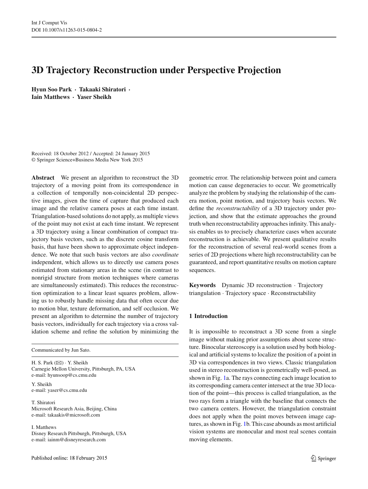
3D Trajectory Reconstruction under Perspective Projection透视投影下的3D轨迹重建
Abstract We present an algorithm to reconstruct the 3D trajectory of a moving point from its correspondence in a collection of temporally non-coincidental 2D perspective images, given the time of capture that produced each image and the relative camera poses at each time instant.
摘要：给定各幅图像的拍摄时刻及对应相机的相对位姿，本文提出一种算法，根据一组拍摄时刻互不相同的二维透视图像中的对应点，恢复运动点的三维轨迹。
Triangulation-based solutions do not apply, as multiple views of the point may not exist at each time instant.
基于三角测量的解决方案不适用，因为该点的多个视图可能不存在于每个时刻。
We represent a 3D trajectory using a linear combination of compact trajectory basis vectors, such as the discrete cosine transform basis, that have been shown to approximate object independence.
我们用一组紧凑的轨迹基向量（例如离散余弦变换基）的线性组合表示三维轨迹；已有研究表明，这类基近似独立于具体物体。
We note that such basis vectors are also coordinate independent, which allows us to directly use camera poses estimated from stationary areas in the scene (in contrast to nonrigid structure from motion techniques where cameras are simultaneously estimated).
这些基向量还具有坐标独立性，因此可以直接使用由场景静止区域估计的相机位姿；非刚性运动恢复结构方法则通常同时估计相机参数。
This reduces the reconstruction optimization to a linear least squares problem, allowing us to robustly handle missing data that often occur due to motion blur, texture deformation, and self occlusion.
这将重建优化简化为线性最小二乘问题，使我们能够稳健地处理由于运动模糊、纹理变形和自遮挡而经常发生的丢失数据。
We present an algorithm to determine the number of trajectory basis vectors, individually for each trajectory via a cross validation scheme and refine the solution by minimizing the
我们通过交叉验证，为每条轨迹单独选择基向量数量，并通过最小化
geometric error.
几何误差进一步优化结果。
The relationship between point and camera motion can cause degeneracies to occur.
点和相机运动之间的关系可能会导致退化的发生。
We geometrically analyze the problem by studying the relationship of the camera motion, point motion, and trajectory basis vectors.
我们通过研究相机运动、点运动和轨迹基向量的关系来对问题进行几何分析。
We define the reconstructability of a 3D trajectory under projection, and show that the estimate approaches the ground truth when reconstructability approaches infinity.
我们定义了投影下 3D 轨迹的可重建性，并表明当可重建性接近无穷大时，估计值接近真值。
This analysis enables us to precisely characterize cases when accurate reconstruction is achievable.
这种分析使我们能够在可以实现准确重建的情况下精确地描述情况。
We present qualitative results for the reconstruction of several real-world scenes from a series of 2D projections where high reconstructability can be guaranteed, and report quantitative results on motion capture sequences.
我们提供了从一系列 2D 投影重建几个现实世界场景的定性结果，可以保证高可重建性，并报告运动捕捉序列的定量结果。
Keywords Dynamic 3D reconstruction 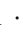
关键词 动态 3D 重建 轨迹三角测量 轨迹空间 可重建性
1 Introduction1 简介
It is impossible to reconstruct a 3D scene from a single image without making prior assumptions about scene structure.
如果不对场景结构进行事先假设，就不可能从单个图像重建 3D 场景。
Binocular stereoscopy is a solution used by both biological and artificial systems to localize the position of a point in 3D via correspondences in two views.
双目立体视觉是生物和人工系统使用的一种解决方案，通过两个视图中的对应关系来定位 3D 中的点的位置。
Classic triangulation used in stereo reconstruction is geometrically well-posed, as shown in Fig. 1a.
立体重建中使用的经典三角测量在几何上是适定的，如图 1a 所示。
The rays connecting each image location to its corresponding camera center intersect at the true 3D location of the point—this process is called triangulation, as the two rays form a triangle with the baseline that connects the two camera centers.
连接每个图像位置与其相应相机中心的光线在该点的真实 3D 位置处相交 - 此过程称为三角测量，因为两条光线与连接两个相机中心的基线形成一个三角形。
However, the triangulation constraint does not apply when the point moves between image captures, as shown in Fig. 1b.
然而，当点在图像捕获之间移动时，三角测量约束不适用，如图 1b 所示。
This case abounds as most artificial vision systems are monocular and most real scenes contain moving elements.
这种情况比比皆是，因为大多数人工视觉系统都是单目的，而且大多数真实场景都包含移动元素。
PDF Page 2PDF第2页
查看第 2 页原文、图表与公式 / Original PDF page
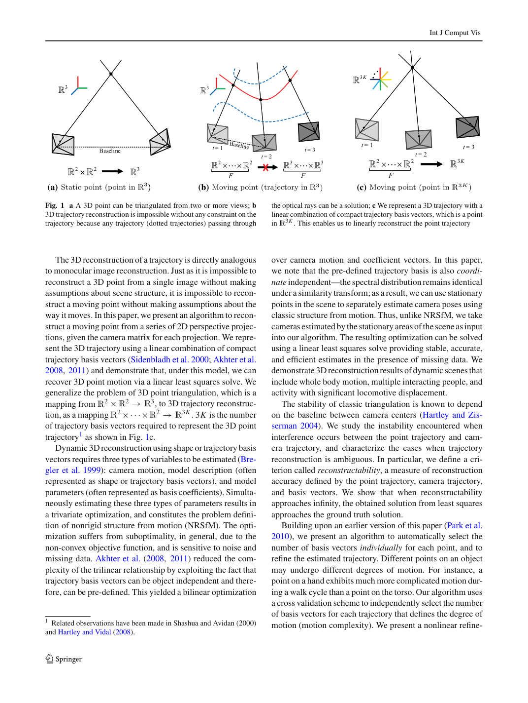
(a) (b) (c) 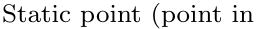 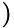 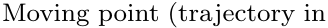 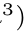 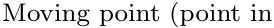 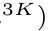 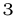
(a) (b) (c)
Fig. 1 a A 3D point can be triangulated from two or more views; b 3D trajectory reconstruction is impossible without any constraint on the trajectory because any trajectory (dotted trajectories) passing through
图 1：a，利用两个或更多视图可三角测量出一个三维点；b，若对轨迹不加约束，则无法唯一恢复三维轨迹，因为任何穿过
The 3D reconstruction of a trajectory is directly analogous to monocular image reconstruction.
轨迹的 3D 重建直接类似于单目图像重建。
Just as it is impossible to reconstruct a 3D point from a single image without making assumptions about scene structure, it is impossible to reconstruct a moving point without making assumptions about the way it moves.
正如在不假设场景结构的情况下不可能从单个图像重建 3D 点一样，在不假设移动方式的情况下也不可能重建移动点。
In this paper, we present an algorithm to reconstruct a moving point from a series of 2D perspective projections, given the camera matrix for each projection.
在本文中，我们提出了一种算法，在给定每个投影的相机矩阵的情况下，从一系列二维透视投影重建移动点。
We represent the 3D trajectory using a linear combination of compact trajectory basis vectors (Sidenbladh et al. 2000; Akhter et al. 2008, 2011) and demonstrate that, under this model, we can recover 3D point motion via a linear least squares solve.
我们使用紧凑轨迹基向量的线性组合来表示 3D 轨迹（Sidenbladh 等人，2000 年；Akhter 等人，2008 年，2011 年），并证明，在该模型下，我们可以通过线性最小二乘求解来恢复 3D 点运动。
We generalize the problem of 3D point triangulation, which is a mapping from 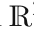 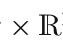 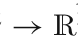 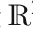 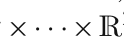 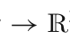
我们将三维点三角测量从 2 2 3 的映射，推广为三维轨迹重建的 2 2 3K 映射。其中 3K 为表示三维点轨迹所需的轨迹基向量数，见图 1c 及脚注 1。
Dynamic3Dreconstructionusingshapeortrajectorybasis vectors requires three types of variables to be estimated (Bregler et al. 1999): camera motion, model description (often represented as shape or trajectory basis vectors), and model parameters (often represented as basis coefficients).
使用形状或轨迹基向量进行动态三维重建需要估计三种类型的变量（Bregler et al. 1999）：相机运动、模型描述（通常表示为形状或轨迹基向量）和模型参数（通常表示为基系数）。
Simultaneously estimating these three types of parameters results in a trivariate optimization, and constitutes the problem definition of nonrigid structure from motion (NRSfM).
同时估计这三类参数形成三变量优化，这就是非刚性运动恢复结构（NRSfM）问题。
The optimization suffers from suboptimality, in general, due to the non-convex objective function, and is sensitive to noise and missing data.
一般来说，由于目标函数非凸，优化会受到次优的影响，并且对噪声和丢失数据很敏感。
Akhter et al. (2008, 2011) reduced the complexity of the trilinear relationship by exploiting the fact that trajectory basis vectors can be object independent and therefore, can be pre-defined.
阿赫特等人 （2008，2011）通过利用轨迹基向量可以是对象独立的，因此可以预先定义这一事实，降低了三线性关系的复杂性。
This yielded a bilinear optimization
这产生了双线性优化
1 Related observations have been made in Shashua and Avidan (2000) and Hartley and Vidal (2008).1 Shashua 和 Avidan (2000) 以及 Hartley 和 Vidal (2008) 提出了相关观察。
the optical rays can be a solution; c We represent a 3D trajectory with a linear combination of compact trajectory basis vectors, which is a point in 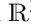
这些观测射线的轨迹（虚线）都可能是解；c，用紧凑轨迹基向量的线性组合表示三维轨迹，等价于 3K 空间中的一个点。
This enables us to linearly reconstruct the point trajectory
这使我们能够线性重建点轨迹
over camera motion and coefficient vectors.
问题，其待估变量为相机运动和系数向量。
In this paper, we note that the pre-defined trajectory basis is also coordinate independent—the spectral distribution remains identical under a similarity transform; as a result, we can use stationary points in the scene to separately estimate camera poses using classic structure from motion.
本文指出，预定义轨迹基还具有坐标独立性：相似变换不改变其谱分布。因此，可以利用场景中的静止点，通过传统运动恢复结构方法单独估计相机位姿。
Thus, unlike NRSfM, we take camerasestimatedbythestationaryareasofthesceneasinput into our algorithm.
因此，与 NRSfM 不同，我们将场景静止区域估计的摄像机输入到我们的算法中。
The resulting optimization can be solved using a linear least squares solve providing stable, accurate, and efficient estimates in the presence of missing data.
可以使用线性最小二乘法求解得到的优化结果，在存在缺失数据的情况下提供稳定、准确和有效的估计。
We demonstrate 3D reconstruction results of dynamic scenes that include whole body motion, multiple interacting people, and activity with significant locomotive displacement.
我们展示了多种动态场景的三维重建，包括全身运动、多人交互以及整体位置发生明显变化的活动。
The stability of classic triangulation is known to depend on the baseline between camera centers (Hartley and Zisserman 2004).
众所周知，经典三角测量的稳定性取决于相机中心之间的基线（Hartley 和 Zisserman 2004）。
We study the instability encountered when interference occurs between the point trajectory and camera trajectory, and characterize the cases when trajectory reconstruction is ambiguous.
我们研究了点轨迹和相机轨迹之间发生干扰时遇到的不稳定性，并描述了轨迹重建模糊的情况。
In particular, we define a criterion called reconstructability, a measure of reconstruction accuracy defined by the point trajectory, camera trajectory, and basis vectors.
特别是，我们定义了一个称为可重建性的标准，这是由点轨迹、相机轨迹和基向量定义的重建精度的度量。
We show that when reconstructability approaches infinity, the obtained solution from least squares approaches the ground truth solution.
我们证明，当可重建性接近无穷大时，从最小二乘法获得的解接近真值解。
Building upon an earlier version of this paper (Park et al. 2010), we present an algorithm to automatically select the number of basis vectors individually for each point, and to refine the estimated trajectory.
基于本文的早期版本（Park et al. 2010），我们提出了一种算法，可以自动为每个点单独选择基向量的数量，并细化估计的轨迹。
Different points on an object may undergo different degrees of motion.
物体上的不同点可能会经历不同程度的运动。
For instance, a point on a hand exhibits much more complicated motion during a walk cycle than a point on the torso.
例如，在步行周期中，手上的点表现出比躯干上的点复杂得多的运动。
Our algorithm uses a cross validation scheme to independently select the number of basis vectors for each trajectory that defines the degree of motion (motion complexity).
我们的算法使用交叉验证方案来独立选择定义运动程度（运动复杂性）的每个轨迹的基本向量的数量。
We present a nonlinear refine-
我们提出了一种非线性细化
PDF Page 3PDF第3页
查看第 3 页原文、图表与公式 / Original PDF page
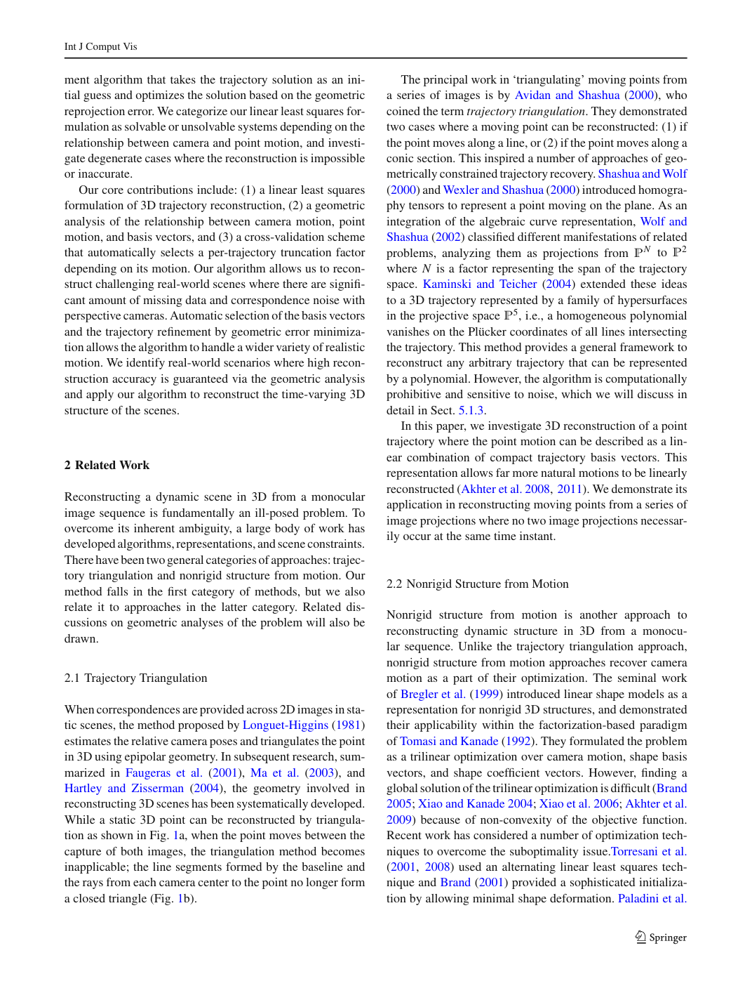
ment algorithm that takes the trajectory solution as an initial guess and optimizes the solution based on the geometric reprojection error.
该算法以轨迹解作为初始猜测，并根据几何重投影误差优化解。
We categorize our linear least squares formulation as solvable or unsolvable systems depending on the relationship between camera and point motion, and investigate degenerate cases where the reconstruction is impossible or inaccurate.
我们根据相机和点运动之间的关系将线性最小二乘公式分类为可解或不可解的系统，并研究重建不可能或不准确的退化情况。
Our core contributions include: (1) a linear least squares formulation of 3D trajectory reconstruction, (2) a geometric analysis of the relationship between camera motion, point motion, and basis vectors, and (3) a cross-validation scheme that automatically selects a per-trajectory truncation factor depending on its motion.
我们的核心贡献包括：(1) 3D 轨迹重建的线性最小二乘公式，(2) 相机运动、点运动和基向量之间关系的几何分析，以及 (3) 交叉验证方案，根据其运动自动选择每个轨迹截断因子。
Our algorithm allows us to reconstruct challenging real-world scenes where there are signifi- cant amount of missing data and correspondence noise with perspective cameras.
我们的算法使我们能够重建具有挑战性的现实世界场景，其中存在大量丢失数据和透视相机的对应噪声。
Automatic selection of the basis vectors and the trajectory refinement by geometric error minimization allows the algorithm to handle a wider variety of realistic motion.
自动选择基向量并通过几何误差最小化来细化轨迹，使算法能够处理更广泛的实际运动。
We identify real-world scenarios where high reconstruction accuracy is guaranteed via the geometric analysis and apply our algorithm to reconstruct the time-varying 3D structure of the scenes.
我们通过几何分析确定了保证高重建精度的现实场景，并应用我们的算法来重建场景的时变 3D 结构。
2 Related Work2 相关工作
Reconstructing a dynamic scene in 3D from a monocular image sequence is fundamentally an ill-posed problem.
从单目图像序列重建 3D 动态场景从根本上来说是一个不适定问题。
To overcome its inherent ambiguity, a large body of work has developedalgorithms, representations, andsceneconstraints.
为了克服其固有的模糊性，大量的工作开发了算法、表示和场景约束。
Therehavebeentwogeneralcategoriesofapproaches:trajectory triangulation and nonrigid structure from motion.
方法有两大类：轨迹三角测量和非刚性运动恢复结构。
Our method falls in the first category of methods, but we also relate it to approaches in the latter category.
我们的方法属于第一类方法，但我们也将其与后一类方法联系起来。
Related discussions on geometric analyses of the problem will also be drawn.
对问题的几何分析的相关讨论也会引出。
2.1 Trajectory Triangulation2.1 轨迹三角测量
When correspondences are provided across 2D images in static scenes, the method proposed by Longuet-Higgins (1981) estimates the relative camera poses and triangulates the point in 3D using epipolar geometry.
当静态场景中的 2D 图像之间提供对应关系时，Longuet-Higgins (1981) 提出的方法会估计相对相机位姿，并使用对极几何对 3D 中的点进行三角测量。
In subsequent research, summarized in Faugeras et al. (2001), Ma et al. (2003), and Hartley and Zisserman (2004), the geometry involved in reconstructing 3D scenes has been systematically developed.
在随后的研究中，Faugeras 等人进行了总结。 (2001)，马等人 (2003)、Hartley 和 Zisserman (2004)，重建 3D 场景所涉及的几何学已经得到了系统的发展。
While a static 3D point can be reconstructed by triangulation as shown in Fig. 1a, when the point moves between the capture of both images, the triangulation method becomes inapplicable; the line segments formed by the baseline and the rays from each camera center to the point no longer form a closed triangle (Fig. 1b).
虽然静态 3D 点可以通过三角测量来重建，如图 1a 所示，但当该点在两幅图像的捕获之间移动时，三角测量方法就变得不适用；由基线和每个相机中心到该点的射线形成的线段不再形成闭合三角形（图1b）。
The principal work in ‘triangulating’ moving points from a series of images is by Avidan and Shashua (2000), who coined the term trajectory triangulation.
对一系列图像中的移动点进行“三角测量”的主要工作是由 Avidan 和 Shashua (2000) 完成的，他们创造了轨迹三角测量这一术语。
They demonstrated two cases where a moving point can be reconstructed: (1) if the point moves along a line, or (2) if the point moves along a conic section.
他们演示了可以重建移动点的两种情况：（1）如果点沿直线移动，或（2）如果点沿圆锥曲线移动。
This inspired a number of approaches of geometrically constrained trajectory recovery.
这启发了许多几何约束轨迹恢复的方法。
Shashua and Wolf (2000) and Wexler and Shashua (2000) introduced homography tensors to represent a point moving on the plane.
Shashua 和 Wolf (2000) 以及 Wexler 和 Shashua (2000) 引入单应性张量来表示平面上移动的点。
As an integration of the algebraic curve representation, Wolf and Shashua (2002) classified different manifestations of related problems, analyzing them as projections from 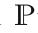 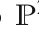
作为代数曲线表示的整合，Wolf 和 Shashua (2002) 对相关问题的不同表现形式进行了分类，将其分析为从N 到2 的投影
where N is a factor representing the span of the trajectory space.
其中N是代表轨迹空间跨度的因子。
Kaminski and Teicher (2004) extended these ideas to a 3D trajectory represented by a family of hypersurfaces in the projective space 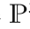
Kaminski 和 Teicher (2004) 将这些想法扩展到由射影空间5 中的一系列超曲面表示的 3D 轨迹，即齐次多项式在与轨迹相交的所有直线的 Plücker 坐标上消失。
This method provides a general framework to reconstruct any arbitrary trajectory that can be represented by a polynomial.
该方法提供了一个通用框架来重建可由多项式表示的任意轨迹。
However, the algorithm is computationally prohibitive and sensitive to noise, which we will discuss in detail in Sect. 5.1.3.
但该算法计算开销过高且对噪声敏感，详见第 5.1.3 节。
In this paper, we investigate 3D reconstruction of a point trajectory where the point motion can be described as a linear combination of compact trajectory basis vectors.
在本文中，我们研究了点轨迹的 3D 重建，其中点运动可以描述为紧凑轨迹基向量的线性组合。
This representation allows far more natural motions to be linearly reconstructed (Akhter et al. 2008, 2011).
这种表示允许线性重建更自然的运动（Akhter et al. 2008, 2011）。
We demonstrate its application in reconstructing moving points from a series of image projections where no two image projections necessarily occur at the same time instant.
我们演示了它在从一系列图像投影重建移动点方面的应用，其中两个图像投影不一定同时发生。
2.2 Nonrigid Structure from Motion2.2 非刚性运动恢复结构
Nonrigid structure from motion is another approach to reconstructing dynamic structure in 3D from a monocular sequence.
非刚性运动恢复结构是根据单目序列重建动态三维结构的另一类方法。
Unlike the trajectory triangulation approach, nonrigid structure from motion approaches recover camera motion as a part of their optimization.
与轨迹三角测量不同，非刚性运动恢复结构将相机运动的恢复纳入联合优化。
The seminal work of Bregler et al. (1999) introduced linear shape models as a representation for nonrigid 3D structures, and demonstrated their applicability within the factorization-based paradigm of Tomasi and Kanade (1992).
布雷格勒等人的开创性工作。 (1999) 引入线性形状模型作为非刚性 3D 结构的表示，并证明了它们在 Tomasi 和 Kanade (1992) 基于分解的范式中的适用性。
They formulated the problem as a trilinear optimization over camera motion, shape basis vectors, and shape coefficient vectors.
他们将该问题表述为相机运动、形状基向量和形状系数向量的三线性优化。
However, finding a global solution of the trilinear optimization is difficult (Brand 2005; Xiao and Kanade 2004; Xiao et al. 2006; Akhter et al. 2009) because of non-convexity of the objective function.
然而，由于目标函数的非凸性，找到三线性优化的全局解很困难（Brand 2005；Xiao 和 Kanade 2004；Xiao 等人 2006；Akhter 等人 2009）。
Recent work has considered a number of optimization techniques to overcome the suboptimality issue.Torresani et al. (2001, 2008) used an alternating linear least squares technique and Brand (2001) provided a sophisticated initialization by allowing minimal shape deformation.
最近的工作考虑了许多优化技术来克服次优问题。Torresani 等人 (2001, 2008) 使用交替线性最小二乘技术，Brand (2001) 通过允许最小的形状变形提供了复杂的初始化。
Paladini et al.
帕拉迪尼等人。
PDF Page 4PDF第4页
查看第 4 页原文、图表与公式 / Original PDF page
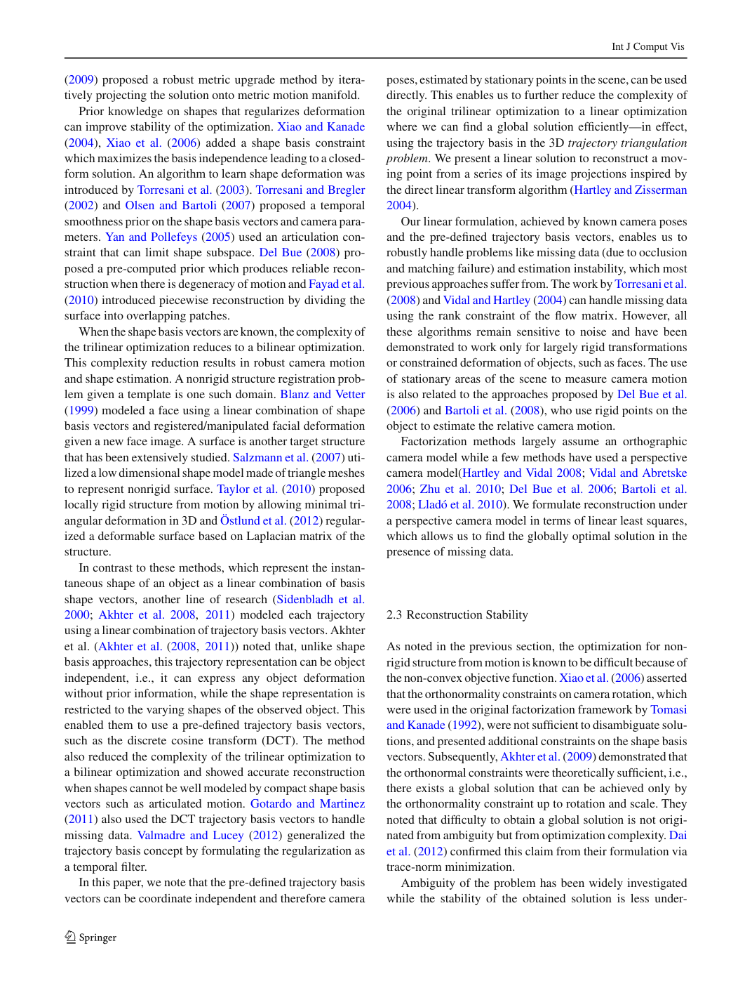
(2009) proposed a robust metric upgrade method by iteratively projecting the solution onto metric motion manifold.
(2009) 通过迭代地将解投影到度量运动流形上，提出了一种鲁棒的度量升级方法。
Prior knowledge on shapes that regularizes deformation can improve stability of the optimization.
有关使变形规则化的形状的先验知识可以提高优化的稳定性。
Xiao and Kanade (2004), Xiao et al. (2006) added a shape basis constraint which maximizes the basis independence leading to a closedform solution.
肖和 Kanade (2004)，肖等人 (2006) 添加了一个形状基础约束，它最大化了基向量的独立性，从而产生了闭式解。
An algorithm to learn shape deformation was introduced by Torresani et al. (2003).
Torresani 等人提出了一种学习形状变形的算法。 （2003）。
Torresani and Bregler (2002) and Olsen and Bartoli (2007) proposed a temporal smoothness prior on the shape basis vectors and camera parameters.
Torresani 和 Bregler (2002) 以及 Olsen 和 Bartoli (2007) 提出了形状基向量和相机参数的时间平滑先验。
Yan and Pollefeys (2005) used an articulation constraint that can limit shape subspace.
Yan 和 Pollefeys (2005) 使用可以限制形状子空间的关节约束。
Del Bue (2008) proposed a pre-computed prior which produces reliable reconstruction when there is degeneracy of motion and Fayad et al. (2010) introduced piecewise reconstruction by dividing the surface into overlapping patches.
Del Bue (2008) 提出了一种预先计算的先验，当存在运动退化时，它可以产生可靠的重建，Fayad 等人 (2010) 通过将表面划分为重叠的面片引入了分段重建。
Whentheshapebasisvectorsareknown,thecomplexityof the trilinear optimization reduces to a bilinear optimization.
当形状基向量已知时，三线性优化的复杂性降低为双线性优化。
This complexity reduction results in robust camera motion and shape estimation.
这种复杂性的降低导致了强大的相机运动和形状估计。
A nonrigid structure registration problem given a template is one such domain.
给定模板的非刚性结构配准就是其中一种应用。
Blanz and Vetter (1999) modeled a face using a linear combination of shape basis vectors and registered/manipulated facial deformation given a new face image.
Blanz 和 Vetter（1999）用形状基向量的线性组合建立人脸模型，并针对新的人脸图像配准或调整面部形变。
A surface is another target structure that has been extensively studied.
表面是另一种被广泛研究的目标结构。
Salzmann et al. (2007) utilized a low dimensional shape model made of triangle meshes to represent nonrigid surface.
萨尔兹曼等人 (2007)利用由三角形网格组成的低维形状模型来表示非刚性表面。
Taylor et al. (2010) proposed locally rigid structure from motion by allowing minimal triangular deformation in 3D and Östlund et al. (2012) regularized a deformable surface based on Laplacian matrix of the structure.
泰勒等人 (2010) 通过允许 3D 中的最小三角形变形提出了运动的局部刚性结构，以及 Östlund 等人 (2012) 基于结构的拉普拉斯矩阵对可变形表面进行正则化。
In contrast to these methods, which represent the instantaneous shape of an object as a linear combination of basis shape vectors, another line of research (Sidenbladh et al. 2000; Akhter et al. 2008, 2011) modeled each trajectory using a linear combination of trajectory basis vectors.
这些方法将物体的瞬时形状表示为形状基向量的线性组合，与此相反，另一项研究（Sidenbladh 等人，2000 年；Akhter 等人，2008 年，2011 年）使用轨迹基向量的线性组合对每个轨迹进行建模。
Akhter et al. (Akhter et al. (2008, 2011)) noted that, unlike shape basis approaches, this trajectory representation can be object independent, i.e., it can express any object deformation without prior information, while the shape representation is restricted to the varying shapes of the observed object.
阿赫特等人 （Akhter 等人（2008，2011））指出，与基于形状的方法不同，这种轨迹表示可以是与对象无关的，即，它可以在没有先验信息的情况下表达任何对象变形，而形状表示仅限于观察对象的变化形状。
This enabled them to use a pre-defined trajectory basis vectors, such as the discrete cosine transform (DCT).
这使他们能够使用预定义的轨迹基向量，例如离散余弦变换（DCT）。
The method also reduced the complexity of the trilinear optimization to a bilinear optimization and showed accurate reconstruction when shapes cannot be well modeled by compact shape basis vectors such as articulated motion.
该方法还将三线性优化的复杂性降低为双线性优化，并且当形状不能通过紧凑的形状基向量（例如关节运动）很好地建模时，显示出精确的重建。
Gotardo and Martinez (2011) also used the DCT trajectory basis vectors to handle missing data.
Gotardo 和 Martinez (2011) 还使用 DCT 轨迹基向量来处理丢失的数据。
Valmadre and Lucey (2012) generalized the trajectory basis concept by formulating the regularization as a temporal filter.
Valmadre 和 Lucey (2012) 通过将正则化表述为时间滤波器，概括了轨迹基概念。
In this paper, we note that the pre-defined trajectory basis vectors can be coordinate independent and therefore camera
在本文中，我们注意到预定义的轨迹基向量可以是坐标独立的，因此相机
poses, estimated by stationary points in the scene, can be used directly.
位姿可由场景静止点估计并直接用于重建。
This enables us to further reduce the complexity of the original trilinear optimization to a linear optimization where we can find a global solution efficiently—in effect, using the trajectory basis in the 3D trajectory triangulation problem.
这使我们能够进一步将原始三线性优化的复杂性降低为线性优化，在线性优化中我们可以有效地找到全局解决方案——实际上，使用 3D 轨迹三角测量问题中的轨迹基。
We present a linear solution to reconstruct a moving point from a series of its image projections inspired by the direct linear transform algorithm (Hartley and Zisserman 2004).
受直接线性变换算法的启发，我们提出了一种线性解决方案，可以从一系列图像投影中重建移动点（Hartley 和 Zisserman 2004）。
Our linear formulation, achieved by known camera poses and the pre-defined trajectory basis vectors, enables us to robustly handle problems like missing data (due to occlusion and matching failure) and estimation instability, which most previous approaches suffer from.
我们的线性公式是通过已知的相机位姿和预定义的轨迹基向量实现的，使我们能够稳健地处理数据丢失（由于遮挡和匹配失败）和估计不稳定等问题，而这是大多数以前的方法所面临的问题。
The work by Torresani et al. (2008) and Vidal and Hartley (2004) can handle missing data using the rank constraint of the flow matrix.
托雷萨尼等人的作品。 (2008) 以及 Vidal 和 Hartley (2004) 可以使用流矩阵的秩约束来处理缺失数据。
However, all these algorithms remain sensitive to noise and have been demonstrated to work only for largely rigid transformations or constrained deformation of objects, such as faces.
然而，所有这些算法仍然对噪声敏感，并且已被证明仅适用于物体（例如面部）的很大程度上刚性变换或受限变形。
The use of stationary areas of the scene to measure camera motion is also related to the approaches proposed by Del Bue et al. (2006) and Bartoli et al. (2008), who use rigid points on the object to estimate the relative camera motion.
使用场景的静止区域来测量相机运动也与 Del Bue 等人提出的方法有关。 (2006) 和巴托利等人 (2008)，他们使用物体上的刚性点来估计相对相机运动。
Factorization methods largely assume an orthographic camera model while a few methods have used a perspective camera model(Hartley and Vidal 2008; Vidal and Abretske 2006; Zhu et al. 2010; Del Bue et al. 2006; Bartoli et al. 2008; Lladó et al. 2010).
分解方法主要假设正交相机模型，而少数方法使用透视相机模型（Hartley and Vidal 2008；Vidal and Abretske 2006；Zhu et al. 2010；Del Bue et al. 2006；Bartoli et al. 2008；Lladó et al. 2010）。
We formulate reconstruction under a perspective camera model in terms of linear least squares, which allows us to find the globally optimal solution in the presence of missing data.
我们根据线性最小二乘法在透视相机模型下制定重建，这使我们能够在存在缺失数据的情况下找到全局最优解。
2.3 Reconstruction Stability2.3 重建稳定性
As noted in the previous section, the optimization for nonrigid structure from motion is known to be difficult because of the non-convex objective function.
如上一节所述，由于目标函数非凸，因此非刚性运动恢复结构的优化是很困难的。
Xiao et al. (2006) asserted that the orthonormality constraints on camera rotation, which were used in the original factorization framework by Tomasi and Kanade (1992), were not sufficient to disambiguate solutions, and presented additional constraints on the shape basis vectors.
Xiao 等人（2006）认为，Tomasi 和 Kanade（1992）原始分解框架中的相机旋转正交归一约束不足以消除解的歧义，因此提出了形状基向量的额外约束。
Subsequently, Akhter et al. (2009) demonstrated that the orthonormal constraints were theoretically sufficient, i.e., there exists a global solution that can be achieved only by the orthonormality constraint up to rotation and scale.
随后 Akhter 等人（2009）证明，正交归一约束在理论上已足够：仅凭该约束便存在一个全局解，其不确定性只剩整体旋转和尺度。
They noted that difficulty to obtain a global solution is not originated from ambiguity but from optimization complexity.
他们指出，获得全局解决方案的困难并非源于模糊性，而是源于优化的复杂性。
Dai et al. (2012) confirmed this claim from their formulation via trace-norm minimization.
戴等人 (2012) 通过迹范数最小化从他们的表述中证实了这一说法。
Ambiguity of the problem has been widely investigated while the stability of the obtained solution is less under-
问题的歧义性已得到广泛研究，但人们对所得解的稳定性
PDF Page 5PDF第5页
查看第 5 页原文、图表与公式 / Original PDF page
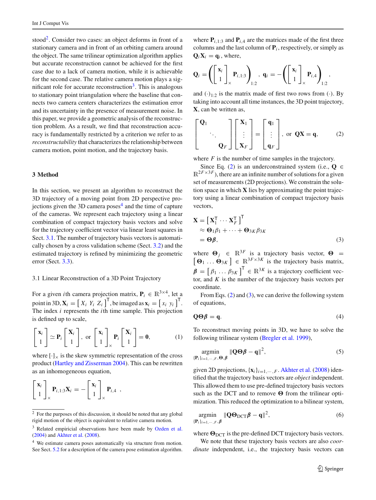
stood2.
仍缺乏充分认识（见脚注 2）。
Consider two cases: an object deforms in front of a stationary camera and in front of an orbiting camera around the object.
考虑两种情况：对象在固定摄像机前和围绕该对象的轨道摄像机前变形。
The same trilinear optimization algorithm applies but accurate reconstruction cannot be achieved for the first case due to a lack of camera motion, while it is achievable for the second case.
应用相同的三线性优化算法，但由于缺乏相机运动，第一种情况无法实现准确的重建，而第二种情况可以实现。
The relative camera motion plays a significant role for accurate reconstruction3.
相对相机运动对于精确重建起着重要作用。
This is analogous to stationary point triangulation where the baseline that connects two camera centers characterizes the estimation error and its uncertainty in the presence of measurement noise.
这类似于静止点三角测量，其中连接两个相机中心的基线表征了估计误差及其在存在测量噪声的情况下的不确定性。
In this paper, we provide a geometric analysis of the reconstruction problem.
在本文中，我们提供了重建问题的几何分析。
As a result, we find that reconstruction accuracy is fundamentally restricted by a criterion we refer to as reconstructability that characterizes the relationship between camera motion, point motion, and the trajectory basis.
结果，我们发现重建精度从根本上受到我们称为可重建性的标准的限制，该标准描述了相机运动、点运动和轨迹基之间的关系。
3 Method3 方法
In this section, we present an algorithm to reconstruct the 3D trajectory of a moving point from 2D perspective projections given the 3D camera poses4 and the time of capture of the cameras.
在本节中，我们提出了一种算法，在给定 3D 相机位姿 4 和相机捕获时间的情况下，根据 2D 透视投影重建移动点的 3D 轨迹。
We represent each trajectory using a linear combination of compact trajectory basis vectors and solve for the trajectory coefficient vector via linear least squares in Sect. 3.1.
第 3.1 节用紧凑轨迹基向量的线性组合表示各条轨迹，并通过线性最小二乘求解轨迹系数向量。
The number of trajectory basis vectors is automatically chosen by a cross validation scheme (Sect. 3.2) and the estimated trajectory is refined by minimizing the geometric error (Sect. 3.3).
轨迹基向量的数量由交叉验证方案自动选择（第 3.2 节），并且通过最小化几何误差来细化估计轨迹（第 3.3 节）。
3.1 Linear Reconstruction of a 3D Point Trajectory3.1 3D点轨迹的线性重建
For a given ith camera projection matrix, Pi 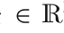 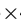 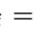
对于给定的第 i 个相机投影矩阵，Pi 3 4，设三维点 Xi
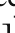
T，其图像投影为 xi
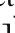
T。索引i代表第i个时间样本。
This projection is defined up to scale,
投影关系在一个非零尺度因子意义下成立：
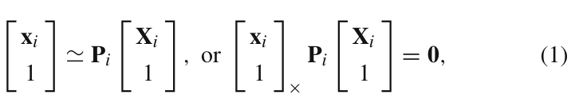
where 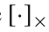
其中是叉积的反对称表示（Hartley and Zisserman 2004）。
This can be rewritten as an inhomogeneous equation, 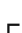
这可以重写为非齐次方程
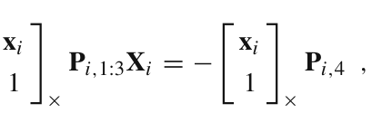
2 For the purposes of this discussion, it should be noted that any global rigid motion of the object is equivalent to relative camera motion.
2 出于本次讨论的目的，应该注意的是，物体的任何全局刚性运动都等效于相对相机运动。
3 Related empiricial observations have been made by Ozden et al. (2004) and Akhter et al. (2008).
脚注 3：Ozden 等人（2004）与 Akhter 等人（2008）报告过相关的经验性观察。
4 We estimate camera poses automatically via structure from motion.
脚注 4：我们通过运动恢复结构自动估计相机位姿。
See Sect. 5.2 for a description of the camera pose estimation algorithm.
相机位姿估计算法详见第 5.2 节。
where Pi 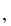 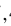 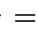
其中 Pi 1 3 和 Pi 4 分别是 Pi 的前三列和最后一列组成的矩阵，或简称为 QiXi qi，其中，
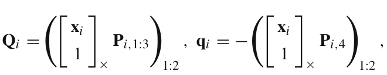
and 1 2 is the matrix made of first two rows from 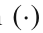
且 1 2 是由 的前两行组成的矩阵。
By taking into account all time instances, the 3D point trajectory, X, can be written as,
将所有采样时刻合在一起，三维点轨迹 X 可写为：
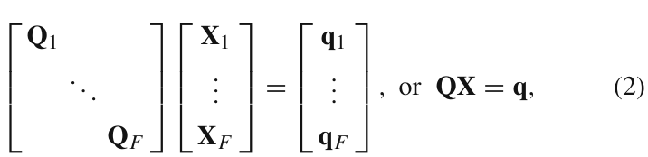
where F is the number of time samples in the trajectory.
其中 F 是轨迹中的时间样本数。
Since Eq. (2) is an underconstrained system (i.e., Q 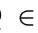 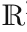
由于式（2） 是一个欠约束系统（即 Q 2F 3F），对于给定的一组测量（二维投影）有无限多个解。
We constrain the solution space in which X lies by approximating the point trajectory using a linear combination of compact trajectory basis vectors,
我们通过使用紧凑轨迹基向量的线性组合来近似点轨迹来约束 X 所在的解空间，
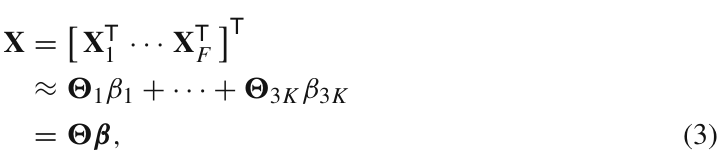
where 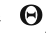 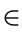 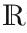 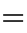 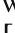
其中 j 3F 为轨迹基向量，
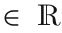
3F 3K 为轨迹基矩阵，
T 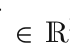
T 3K 是轨迹系数向量，K 是每个坐标的轨迹基向量的数量。
From Eqs. (2) and (3), we can derive the following system of equations,
从式（2）和(3)，我们可以推导出以下方程组，
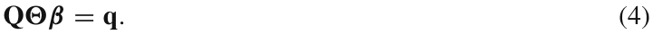
To reconstruct moving points in 3D, we have to solve the following trilinear system (Bregler et al. 1999),
为了在 3D 中重建移动点，我们必须求解以下三线性系统（Bregler et al. 1999），
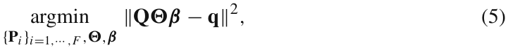
given 2D projections, xi i 1 F. Akhter et al. (2008) identified that the trajectory basis vectors are object independent.
给定 2D 投影， xi i 1 F. Akhter 等人 (2008) 发现轨迹基向量是与对象无关的。
This allowed them to use pre-defined trajectory basis vectors such as the DCT and to remove from the trilinear optimization.
这使得他们能够使用预定义的轨迹基向量（例如 DCT），并从三线性优化中删除。
This reduced the optimization to a bilinear system,
这将原问题简化为如下双线性系统：
where DCT is the pre-defined DCT trajectory basis vectors.
其中DCT是预先定义的DCT轨迹基向量。
We note that these trajectory basis vectors are also coordinate independent, i.e., the trajectory basis vectors can
我们注意到这些轨迹基向量也是坐标独立的，即轨迹基向量可以
PDF Page 6PDF第6页
查看第 6 页原文、图表与公式 / Original PDF page
(a) (b)
(a) (b)
Ground truth trajectory Reconstructed trajectory Camera trajectory Line of projection
真值轨迹 重建轨迹 相机轨迹 投影线
Fig. 2 We reconstruct a trajectory using linear least squares. a The reconstructed trajectory is illustrated in two views.
图 2 我们使用线性最小二乘法重建轨迹。 a 重建的轨迹以两个视图示出。
The trajectory, which is represented by a linear combination of trajectory basis vectors, passes through all lines of projections.
由轨迹基向量的线性组合表示的轨迹穿过所有投影线。
The blue pyramids are camera poses. b
蓝色视锥表示相机位姿。b，
compactly represent a trajectory equally well in any arbitrary orthogonal world coordinate system via the following Result 1.
通过以下结果 1 紧凑地表示任意正交世界坐标系中同样好的轨迹。
Result 1 The spectral distribution of a 3D trajectory basis is invariant to 3D similarity transforms.
结果 1 3D 轨迹基的谱分布对于 3D 相似变换是不变的。
See the Appendix for a proof.
证明见附录。
The consequence of Result 1 is that we can estimate the camera motion, PSfM, independently, using structure from motion on the stationary points in a scene (Hartley and Zisserman 2004) as discussed in Sect. 5.2.
由结果 1 可知，可独立利用场景静止点进行运动恢复结构，估计相机运动 PSfM（Hartley and Zisserman 2004），详见第 5.2 节。
This further reduces the bilinear system to a linear system as follows,
这进一步将双线性系统简化为线性系统，如下：
QSfM DCT qSfM 2 (7)
QSfM DCT qSfM 2 (7)
Solving Eq. (7) for the trajectory coefficient vector, , is a linear least squares system if 2F 3K, which provides an efficient, numerically stable, and globally optimal solution.
求解式（7） 对于轨迹系数向量， 是一个线性最小二乘系统，如果 2F 3K，它提供了一个有效的、数值稳定的全局最优解。
Figure 2 shows 3D trajectory reconstruction via Eq. (7) in the presence of measurement noise.
图 2 展示了存在测量噪声时，用式（7）恢复三维轨迹的结果。
Figure 2a illustrates the camera trajectory and point trajectory with the lines of projections from two perspectives.
图2a展示了相机轨迹和点轨迹以及两个视角的投影线。
The reconstructed trajectory is a trajectory that passes through all lines of projections and that is represented by a linear combination of the trajectory basis vectors.
重建轨迹是经过所有投影线的轨迹，并且由轨迹基向量的线性组合表示。
Figure 2b shows how the reconstructed trajectory and ground truth trajectory are similar.
图 2b 显示了重建轨迹和真值轨迹的相似之处。
If there are missing data by self-occlusion or measurement noise, the corresponding rows in Q and q may be dropped in Eq. (7).
若自遮挡或测量问题导致数据缺失，可删除式（7）中 Q 和 q 的对应行。
As long as the resulting Q matrix satisfies the least squares criterion, i.e., 2 F 3K where F is the remaining number of measurements, the estimation of is robust.
只要生成的Q矩阵满足最小二乘准则，即2F3K，其中F是剩余的测量次数，的估计是稳健的。
This allows us to handle the problem of missing data.
这使我们能够处理丢失数据的问题。
Ground truth trajectory Reconstructed trajectory
真值轨迹 重建轨迹
We project the ground truth trajectory and the reconstructed trajectory into the X, Y, and Z axis to show the accuracy of trajectory reconstruction.
我们将真值轨迹和重建轨迹投影到X、Y和Z轴上以显示轨迹重建的准确性。
Trajectory reconstruction via Eq. (7) produces an accurate solution
通过方程重建轨迹(7) 产生准确的解
3.2 Selection of the Number of Basis Vectors3.2 基向量个数的选择
Our approach requires the selection of the number of basis vectors, K. In Akhter et al. (2008, 2011) and Park et al. (2010), the number of the DCT basis vectors was manually tuned and all trajectories were reconstructed with the same number of the basis vectors.
我们的方法需要选择基向量的数量 K。在 Akhter 等人中。 （2008，2011）和 Park 等人 (2010)，手动调整 DCT 基向量的数量，并使用相同数量的基向量重建所有轨迹。
This is undesirable because different points may undergo different degrees of motion.
这是不希望的，因为不同的点可能经历不同程度的运动。
The number of the basis vectors controls the complexity of the trajectory motion.
基向量的数量控制轨迹运动的复杂性。
For example, a point that undergoes complex motion such as hands in the dance scene shown in Fig. 13a, requires higher K, i.e., high frequency DCT trajectory basis vectors are needed to represent and reconstruct the complex motion; a point that undergoes simple motion such as the left leg can be represented by more aggressive truncation, retaining only low frequency DCT trajectory basis vectors.
例如，如图13a所示的舞蹈场景中的手等进行复杂运动的点，需要较高的K，即需要高频DCT轨迹基向量来表示和重建复杂运动；经历简单运动的点（例如左腿）可以通过更激进的截断来表示，仅保留低频 DCT 轨迹基向量。
If K is too high, the algorithm overfits measurement noise, and conversely, if it is too low, the reconstructed trajectory cannot express the detail of the point motion.
如果 K 太高，算法会过度拟合测量噪声，相反，如果 K 太低，重建的轨迹无法表达点运动的细节。
In this section, we present an approach to automatically select Ki for the ith trajectory rather than manually setting a global value of K. Bartoli et al. (2008) also presented a method to select K for shape basis vectors via coarse-to-fine reconstruction; their approach selects a global truncation factor for all the points, while our method can determine it per point.
在本节中，我们提出了一种自动为第 i 个轨迹选择 Ki 的方法，而不是手动设置 K 的全局值。 Bartoli 等人 (2008) 还提出了一种通过从粗到精的重建来选择 K 作为形状基向量的方法；他们的方法为所有点选择一个全局截断因子，而我们的方法可以为每个点确定它。
To select the number of basis vectors automatically and individually, we use an N-fold cross validation scheme to check the consistency of the reconstructed trajectory.
为了自动且单独地选择基向量的数量，我们使用 N 折交叉验证方案来检查重建轨迹的一致性。
The 2D trajectory is divided into N sets such that each set contains F N samples that are uniformly distributed in time across the 2D trajectory.
2D 轨迹被分为 N 组，使得每组包含 F N 个样本，这些样本在 2D 轨迹上时间上均匀分布。
When the jth set, j, is considered, the reprojection error, e j, is evaluated from a 3D trajectory reconstructed from the rest of the N 1 sets for a given
固定基向量数 Ki，将第 j 组 j 留出，用其余 N 1 组重建三维轨迹，再在留出组上评估重投影误差 e j；这里的基向量数为
Ki.
Ki.
This is iterated until all N sets are tested.
如此迭代，直到测试完所有 N 个集合。
When Ki is too
当 Ki 过
PDF Page 7PDF第7页
查看第 7 页原文、图表与公式 / Original PDF page
3D reconstruction error Trajectory fitting w/o cross validation Trajectory fitting w/ cross validation
3D 重建误差 不带交叉验证的轨迹拟合 带交叉验证的轨迹拟合
Reconstruction error
重建误差
Reprojection error
重投影误差
Number of basis, K
基数，K
Fig. 3 We select the number of the DCT basis vectors using a cross validation scheme.
图 3 我们使用交叉验证方案选择 DCT 基向量的数量。
As the number of the basis vectors, K, increases, reprojection error decreases in general, because a larger K can express the detail of the point trajectory.
随着基向量K的数量增加，重投影误差总体上会减小，因为较大的K可以表达点轨迹的细节。
The purple line with markers shows reprojection error as K increases (reprojection error decreases).
带标记的紫色线显示重投影误差随着 K 的增加（重投影误差减小）。
The purple line without markers shows reprojection error measured by our cross validation scheme.
没有标记的紫色线显示了通过我们的交叉验证方案测量的重投影误差。
When K 12, reprojection error is minimized and the most consistent trajectory through all image measurements is achieved.
当 K 12 时，重投影误差最小化，并且在所有图像测量中实现最一致的轨迹。
This also minimizes 3D reconstruction error.
这也最大限度地减少了 3D 重建误差。
Note that the graph has two-sided Y axes, where the left and right Y axes represent reprojection error and 3D reconstruction error in log scale, respectively
请注意，该图有两侧 Y 轴，其中左 Y 轴和右 Y 轴分别表示重投影误差和对数尺度的 3D 重建误差
high, the trajectory overfits measurement noise, which results in high reprojection error.
大时，轨迹会过拟合测量噪声，导致留出数据的重投影误差增大。
When Ki is too low, the reprojection error is also high because of limited expressiveness of the basis vectors.
当Ki太低时，由于基向量的表达能力有限，重投影误差也很高。
We choose the number of the basis vectors for the ith trajectory, which minimizes cross-validated reprojection error, i.e.,
我们选择第 i 个轨迹的基向量的数量，这可以最小化交叉验证的重投影误差，即
where is the floor operator (the largest integer not greater than ).
其中是取整运算符（不大于的最大整数）。
s Ki 3 3Ki is the trajectory basis vectors evaluated at the sth time instant with the 3Ki trajectory basis vectors and Pl is the lth row of the matrix P. xs and ys are a 2D measurement at the sth time instant.
s Ki 3 3Ki 是在第 s 时刻用 3Ki 轨迹基向量计算的轨迹基向量，Pl 是矩阵 P 的第 l 行。 xs 和 ys 是在第 s 时刻的 2D 测量值。
In Fig. 3, the purple line with markers plots the reprojection error as Ki increases.
在图 3 中，带有标记的紫色线绘制了随着 Ki 增加的重投影误差。
Thehigherthetruncationfactor Ki,thelowerthereprojection error because the details of the trajectory can be expressed.
截断因子 Ki 越高，投影误差就越低，因为可以表达轨迹的细节。
However, a higher Ki may overfit measurement noise of the trajectory.
然而，较高的 Ki 可能会过度拟合轨迹的测量噪声。
From our cross validation scheme, we are able to automatically select Ki that is the most expressible but
交叉验证使我们能够自动选择既具有充分表达能力、
the least overfitted.
又尽量避免过拟合的 Ki。
The purple line without markers shows reprojection error and Ki 12 produces the most consistent trajectory for all image measurements (minimum reprojection error) in the presence of measurement noise.
没有标记的紫色线显示重投影误差，Ki 12 在存在测量噪声的情况下为所有图像测量产生最一致的轨迹（最小重投影误差）。
This Ki also minimizes 3D reconstruction error.
该 Ki 还可以最大限度地减少 3D 重建误差。
3.3 3D Trajectory Refinement
3.3 3D 轨迹细化
Trajectory reconstruction from Eq. (7) minimizes the algebraic error (Hartley and Zisserman 2004).
从方程重建轨迹。 (7) 最小化代数误差（Hartley and Zisserman 2004）。
The solution, , is not necessarily the maximum likelihood solution under Gaussian measurement noise.
解不一定是高斯测量噪声下的最大似然解。
We refine the linearly reconstructed trajectory by minimizing the reprojection error, i.e.,
我们通过最小化重投影误差来细化线性重建轨迹，即
i 3 3K is the trajectory basis vectors evaluated at ith time instant.
i 3 3K 是在第i 个时刻计算的轨迹基向量。
4 Geometric Analysis of 3D Trajectory Reconstruction4 3D轨迹重建的几何分析
In practice, we observe the point trajectory reconstruction approaches the ground truth if the camera motion in relation to the point motion is sufficiently large when the DCT trajectory basis vectors are used.
在实践中，当使用 DCT 轨迹基向量时，如果与点运动相关的相机运动足够大，我们观察到点轨迹重建接近真值。
Conversely, if the camera motion is small in relation to the point motion, the solution tends to deviate from the ground truth (Ozden et al. 2004; Akhter et al. 2009).
相反，如果相机运动相对于点运动较小，则解往往会偏离真值（Ozden 等人，2004 年；Akhter 等人，2009 年）。
In this section, we analyze the stability of trajectory reconstruction from Eq. (7) by considering the geometric relationship between the point trajectory, the camera center trajectory, and the trajectory basis vectors.
本节考虑点轨迹、相机中心轨迹与轨迹基向量之间的几何关系，分析式（7）重建结果的稳定性。
We categorize trajectory reconstruction as a solvable or unsolvable system.
我们将轨迹重建分类为可解或不可解的系统。
Trajectory reconstruction is possible only when our least squares system is solvable.
只有当我们的最小二乘系统可解时，轨迹重建才有可能。
More importantly, a solvable system does not guarantee an accurate estimate of the trajectory parameters.
更重要的是，可解系统并不能保证轨迹参数的准确估计。
We define a measure of reconstruction accuracy, reconstructability, for solvable systems.
我们为可解系统定义了重建精度、可重建性的度量。
Reconstructability enables us to precisely characterize when accurate reconstruction of a 3D trajectory is possible.5
可重建性使我们能够精确表征何时可以准确重建 3D 轨迹。5
5 Ambiguity analyses have been investigated by Xiao et al. (2006), Vidal and Abretske (2006), Hartley and Vidal (2008), and Akhter et al. (2009).
脚注 5：Xiao 等人（2006）、Vidal and Abretske（2006）、Hartley and Vidal（2008）及 Akhter 等人（2009）研究过歧义性分析。
However, these analyses consider the ambiguity with the use of a shape basis representation, which utilizes the correlation across multiple points.
然而，这些分析考虑了使用形状基础表示的模糊性，该表示利用了多个点之间的相关性。
In this section, we consider the case of the reconstruction of a single 3D point trajectory.
在本节中，我们考虑重建单个 3D 点轨迹的情况。
PDF Page 8PDF第8页
查看第 8 页原文、图表与公式 / Original PDF page
4.1 Geometry of Camera Trajectory, Point Trajectory, and Trajectory Basis Vectors4.1 相机轨迹、点轨迹和轨迹基向量的几何
Let X and X be a ground truth trajectory and an estimated point trajectory, respectively.
设X和X分别为真值轨迹和估计点轨迹。
The camera matrix can, without loss of generality, be normalized by intrinsic and rotation matrices, K and R, respectively, (as all camera matrices are known), i.e., RT
在不失一般性的情况下，相机矩阵可以分别通过固有矩阵和旋转矩阵 K 和 R 进行归一化（因为所有相机矩阵都是已知的），即 RT
i Pi
i Pi
I3 Ci
I3 Ci
, where Pi KiRi
, 其中 Pi KiRi
I3 Ci
I3 Ci
, Ci is the camera center, and I3 is a 3 3 identity matrix.
，Ci 是相机中心，I3 是 3 3 单位矩阵。
This follows from the fact that triangulation and 3D trajectory reconstruction are both geometrically unaffected by the rotation of the camera about its center.
这是因为三角测量和 3D 轨迹重建在几何上都不受相机绕其中心旋转的影响。
All Pi subsequently used in this analysis are normalized camera matrices, i.e., Pi
此分析中随后使用的所有 Pi 均为归一化相机矩阵，即 Pi
I3 Ci
I3 Ci
.
.
Then, a measurement is a projection of Xi onto the image plane from Eq. (1).
根据式（1），观测值即 Xi 在图像平面上的投影。
Since Eq. (1) is defined up to scale, the measurement, xi, can be replaced as follows,
由于式（1）只在非零尺度因子意义下确定，观测 xi 可以替换为
Inserting Pi
插入 Pi
To satisfy Eq. (12), Xi has to lie in the space spanned by Xi and Ci, or Xi a1Xi a2Ci.
满足式（12）, Xi 必须位于 Xi 和 Ci 所张成的空间内，或者 Xi a1Xi a2Ci。
It can be easily verified that a2 1 a1 by substituting in Eq. (12).
代入式（12），很容易验证 a2 1 a1。
Thus, the solution of Eq. (12) is,
因此，方程的解。 (12) 是，
Xi aiXi 1 ai Ci (13)
Xi aiXi 1 ai Ci (13)
where ai is an arbitrary scalar.
其中 ai 是任意标量。
Geometrically, Eq. (13) is a constraint for the perspective camera model that enforces the solution to lie on the ray joining the camera center and the point in 3D.
从几何角度来说，方程式(13) 是透视相机模型的约束，强制解位于连接相机中心和 3D 点的射线上。
By generalizing the ith point to a point trajectory, Eq. (13) becomes,
通过将第 i 个点推广到点轨迹，方程： (13) 变为，
From Eq. (3), Eq. (14) can be rewritten as AX I A C.
从式（3），式（14） 可改写为 AX I A C。
Figure 4 illustrates the geometry of the solution of Eq. (7).
图 4 说明了方程解的几何形状。 （7）。
Let the subspace, p, be the space spanned by the trajectory basis vectors, col .
令子空间 p 为轨迹基向量 col 所张成的空间。
The solution , has to simultaneously lie in l and col where l is a hyperplane that contains the camera trajectory and the point trajectory.
解必须同时位于l和col中，其中l是包含相机轨迹和点轨迹的超平面。
Thus, is the intersection of the hyperplane l and the subspace
因此，是超平面l与子空间的交集
6 is the Kronecker product and D is a diagonal matrix which consists of a1 aF , the scalar for each point along the trajectory.
6 是克罗内克乘积，D 是对角矩阵，由a1aF组成，即轨迹上每个点的标量。
C Θ col( )
C Θ col( )
X : Point trajectory
X：点轨迹
: Column space : Trajectory basis vectors : Null space of trajectory basis vectors
：列空间 ：轨迹基向量 ：轨迹基向量的零空间
: Camera trajectory : Coefficient vector : Estimated coefficient vector
：摄像机轨迹 ：系数向量 ：估计系数向量
Fig. 4 Geometric illustration of the least squares solution of Eq. (7).
图 4 方程最小二乘解的几何图示（7）。
The trajectory is placed at the intersection between the hyperplane l containing the camera trajectory space and the point trajectory, and the p space spanned by the trajectory basis vectors, col
轨迹放置在包含相机轨迹空间和点轨迹的超平面l与轨迹基向量col所跨越的p空间之间的交点处
p.
p.
Note that the line and the plane are a conceptual 3D vector space representation for the 3F-dimensional space.
请注意，直线和平面是 3F 维空间的概念 3D 向量空间表示。
The camera center trajectory, C
相机中心轨迹，C
T, and the point trajectory, X, are projected onto col as C and X, respectively.
T和点轨迹X分别投影到列上，作为C和X。
CT
CT
1 CT F
1 CT F
4.2 Characterization of Trajectory Reconstruction4.2 轨迹重建的表征
Recovering depends on the camera trajectory as shown in Fig. 4.
恢复取决于相机轨迹，如图4所示。
We study the degeneracy of the solution of Eq. (7) to characterize the cases when trajectory reconstruction is impossible.
我们研究方程解的退化性。 (7) 描述轨迹重建不可能的情况。
The least squares system of Eq. (7) is solvable if rank Q 3K (i.e., it has full column rank).
当 rank Q 3K，即矩阵满列秩时，式（7）的最小二乘系统可解。
4.2.1 Unsolvable Systems4.2.1 不可解系统
When the system is unsolvable, there is a space of solutions where trajectory estimation is ambiguous.
当系统无法求解时，存在一个轨迹估计不明确的解空间。
We characterize such unsolvable systems as follows,
我们将这种不可解的系统描述如下，
Result 2 Trajectory reconstruction via Eq. (7) is unsolvable if
结果 2：若满足下列条件，则式（7）无法唯一、有效地重建轨迹：
(i) X C col , or (ii) X cC 1 d where c is a nonzero scalar, 1 is an F dimensional vector whose entries are all ones, and d 3
(i) X C col 或 (ii) X cC 1 d 其中，c 是非零标量，1 是条目全为 1 的 F 维向量，d 3
is an arbitrary vector.
是任意向量。
Proof (i) If X C col , X X and C C. Then,
证明 (i) 如果 XCcol,XX和CC。那么,
PDF Page 9PDF第9页
查看第 9 页原文、图表与公式 / Original PDF page
Camera trajectory
相机轨迹
Camera trajectory
相机轨迹
Reconstructed trajectories
重建轨迹
Reconstructed trajectories
重建轨迹
Point trajectory
点轨迹
Point trajectory
点轨迹
Fig. 5 We illustrate unsolvable systems that produce an infinite number of solutions or a trivial solution. a Trajectory reconstruction is ambiguous when C X col because there exists null Q , which is an unsolvable system.
图 5 我们展示了产生无限多个解或一个平凡解的不可解系统。 a 当 C X col 时，轨迹重建是不明确的，因为存在空 Q ，这是一个不可解的系统。
Plausible reconstructed trajectories that satisfy Eq. (7) are illustrated. b Plausible reconstructed trajectories that satisfy
满足方程的合理重建轨迹。 (7)如图所示。 b 合理的重建轨迹满足
T. Since there exists a null space of Q , rank Q 3K.
T。由于Q存在零空间，所以秩Q3K。
(ii) Let us consider two cases where c 1 and c 1. When c 1, by plugging X cC 1 d into the Eq. (12), it becomes,
(ii) 让我们考虑两种情况，其中c1和c1。当c1时，将XcC1d代入式（1）。 (12) 则变为,
[ c 1 Ci d] Xi [cCi d] Ci
[ c 1 Ci d] Xi [cCi d] Ci
From Eq. (16), Xi Ci 1 d 1 c where is a scalar.
从式（16）, Xi Ci 1 d 1 c 其中是标量。
When C col , it is the case where the first condition (i) holds, where the system is unsolvable.
当Ccol时，就是第一个条件（i）成立的情况，系统无解。
When C col , 0 because any component of C that cannot be expressed by the trajectory basis vectors results in the residual error of Eq. (3).
当 C col 时， 0；因为 C 中不能由轨迹基向量表示的成分会造成式（3）的残差。
Only 1 d 1 c nullifies the residual error of Eq. (7) but it is still a trivial solution (i.e., a reconstructed trajectory, X 1 d 1 c , is simply a stationary point even though the point undergoes motion.).
仅 1 d 1 c 就可以消除式（1）的残差。 (7) 但它仍然是一个平凡解（即，重建的轨迹， X 1 d 1 c ，只是一个静止点，即使该点经历运动。）。
When c 1, d 1 c term in Xi Ci 1 d 1 c is indeterminate.
当 c 1、d 1 c 项 Xi Ci 1 d 1 c 不确定时。
It is the case where the camera moves exactly the same way the point moves with some offset and rank Q 2K because from Eq. (12) and X C 1 d,
在这种情况下，相机的移动方式与点的移动方式完全相同，但有一定的偏移量和秩Q2K，因为根据方程： (12) 和 X C 1 d,
Camera trajectory
相机轨迹
Point trajectory
点轨迹
Point trajectory
点轨迹
Camera trajectory
相机轨迹
Reconstructed trajectories
重建轨迹
Reconstructed trajectories
重建轨迹
Eq. (7) when C X col and X cC 1 d are shown. c When X cC 1 d where c 1, the solution of the system is always 1 d 1 c , which is trivial. d When X C 1 d, the system is unsolvable because rank Q 2K
式（7） 当显示CXcol和XcC1d时。 c 当 X cC 1 d 其中 c 1 时，系统的解始终为 1 d 1 c ，这是平凡解。 d 当 X C 1 d 时，系统无解，因为秩 Q 2K
T and i blkdiag i i i .
T和iblkdiagiii。
The trajectory basis vectors for each coordinate (x y and z) are the same.
每个坐标（x、y和z）的轨迹基向量是相同的。
Since the rank of the system is 2K, the system is unsolvable.
系统的秩为 2K，因此无法唯一求解。
where d
其中 d
Figure 5 illustrates solutions of unsolvable systems.
图 5 说明了不可解系统的解。
For Result 2.i, Fig. 5a shows an ambiguous solution of Eq. (7) when X C col .
对于结果 2.i，图 5a 显示了方程 2.i 的模糊解。 (7) 当XCcol时。
All reconstructed trajectories lie in one dimensional subspace X C. When X cC 1 d (i.e., Result 2.ii), the system is also unsolvable.
所有重建的轨迹都在一维子空间XC中。当XcC1d（即结果2.ii）时，系统也是不可解的。
When c 1, the solution is Ci 1 1 c d.
当c 1 时，解为 Ci 1 1 c d。
can be nonzero only when C col .
仅当 C col 时，才可以为非零。
Figure 5b illustrates the space of solutions by varying .
图 5b 说明了通过改变的解空间。
When C col , 0 and the solution is always 1 d 1 c (i.e., stationary point) which is a trivial solution as shown in Fig. 5c.
当Ccol、0且解始终为1d1c（即静止点）时，这是一个平凡解，如图5c所示。
Figure 5(d) shows trajectory reconstruction when c 1, which results in rank Q 2K.
图5(d)显示了c1时的轨迹重建，其结果是Q2K。
Any trajectory in K dimensional subspace (i.e., null Q ) is a solution lying on a surface made by the point trajectory and the camera trajectory, which is shown by gray dotted lines.
K 维子空间中的任意轨迹（即空Q）都是位于点轨迹和相机轨迹构成的曲面上的解，用灰色虚线表示。
4.2.2 Solvable Systems4.2.2 可解系统
Result 2 considers an unsolvable system or a system resulting in a trivial solution.
结果 2 考虑了一个无解的系统或一个产生平凡解的系统。
For a solvable system, Eq. (7) can
对于可解系统，方程(7) 可以
PDF Page 10PDF第10页
查看第 10 页原文、图表与公式 / Original PDF page
3D reconstruction error (normalized)
3D 重建误差（标准化）
Null components, eC, (normalized)
零空间分量 eC（归一化）
(a) (b)
(a) (b)
Fig. 6 a As the null component of the camera trajectory eC decreases, the solution of Eq. (7) deviates from the ground truth. b The reconstructability provides the degree of interference between the camera
图 6a 随着相机轨迹 eC 的零空间分量减小，方程的解为： (7) 偏离真值。 b 可重建性提供了相机之间的干扰程度
be solved without ambiguity in a least squares sense and there exists a unique solution, .
在最小二乘意义上可以无歧义地求解，并且存在唯一解。
However, the solvable system does not guarantee an accurate solution: how much deviates from X. We observe that the accuracy of trajectory reconstruction depends on the relationship between the camera center’s 3D trajectory, the 3D point trajectory, and the trajectory basis vectors.
然而，可解系统并不能保证精确的解：偏离X多少。我们观察到，轨迹重建的精度取决于相机中心的3D轨迹、3D点轨迹和轨迹基向量之间的关系。
Given this observation, we characterize the case when reconstruction is accurate.
鉴于这一观察，我们描述了重建准确时的情况。
Solving the least squares system, X , minimizes the residual error by Eq. (14),
由式（14），求解最小二乘系统 X 等价于最小化下述残差：
Let us decompose the point trajectory and the camera trajectory into the column space of and that of the null space, as follows, X X
我们将点轨迹和相机轨迹分解为的列空间和零空间的列空间如下，XX
C, where is the coefficient vector for the null space.
C，其中是零空间的系数向量。
Let us also define a measure of reconstructability, , of the 3D point trajectory reconstruction,
我们还定义 3D 点轨迹重建的可重建性度量，
How poorly describes C
基 对 C 的表示误差
How poorly describes X (18)
基 对 X 的表示误差 （18）
Reconstructability enables us to define the accuracy of the trajectory reconstruction by the following result.
可重建性使我们能够通过以下结果来定义轨迹重建的准确性。
Result 3 lim
结果3 lim
Proof From the triangle inequality, the square root of the objective function of Eq. (17) is bounded by (when
证明 根据三角不等式，可以得到方程目标函数的平方根。 (17) 的边界为 (当
3D reconstruction error (normalized)
3D 重建误差（标准化）
trajectory and point trajectory.
轨迹和点轨迹。
Reconstructability is inversely proportional to 3D reconstruction error
可重建性与 3D 重建误差成反比
As approaches infinity, A in Eq. (20) becomes zero or I A in Eq. (21) becomes infinity.
当 趋于无穷大，式（20）中的 A 趋于零，或式（21）中的 I A 趋于无穷大。
To minimize either Eq. (20) or Eq. (21), A I because it leaves the last term zero and X because it cancels the first term.
为使式（20）或（21）最小，需取 A I 使末项为零，并取 X 使首项为零。
This causes the minimum of Eq. (20) or Eq. (21) to become zero, which upper-bounds the minimum of Eq. (19).
这样，式（20）或（21）的最小值变为零；该最小值是式（19）最小值的上界。
Thus, as approaches infinity, approaches X.
因此，当接近无穷大时，接近X。
Figure 6a shows how reconstructability is related to the accuracy of the 3D reconstruction error.
图 6a 显示了可重建性与 3D 重建误差的准确性之间的关系。
In each reconstruction, the residual error (null components) of the point trajectory, eX
在每次重建中，点轨迹的残差（零空间分量），eX
, and the camera trajectory, eC
，以及相机轨迹，eC
, are measured.
，已测量。
Increasing eC for a given point trajectory enhances the accuracy of the 3D reconstruction, while increasing eX lowers accuracy.
增加给定点轨迹的 eC 可以提高 3D 重建的准确性，而增加 eX 会降低准确性。
Even though we cannot directly measure the reconstructability (we do not know the true point trajectory in a real example), it is useful to understand the direct relation with 3D reconstruction accuracy.
尽管我们无法直接测量可重建性（我们不知道真实示例中的真实点轨迹），但了解与 3D 重建精度的直接关系还是很有用的。
Figure 6b illustrates that the reconstructability is inversely proportional to the 3D reconstruction error.
图 6b 说明可重建性与 3D 重建误差成反比。
PDF Page 11PDF第11页
查看第 11 页原文、图表与公式 / Original PDF page
Ground truth trajectory Reconstructed trajecgtory Covariance
真值轨迹 重建轨迹 协方差
Ground truth trajectory Reconstructed trajectory Covariance
真值轨迹 重建轨迹 协方差
Ground truth trajectory Reconstructed trajectory Camera trajectory Line of projection
真值轨迹 重建轨迹 相机轨迹 投影线
(a) (b)
(a) (b)
Fig. 7 The stability of trajectory reconstruction depends on reconstructability.
图7 轨迹重建的稳定性取决于可重建性。
We reconstruct the same point trajectory with the same camera location but with different ordering.
我们使用相同的相机位置但不同的顺序重建相同的点轨迹。
Note that the DCT trajectory basis vectors are used for reconstruction. a The order of capture forms a smooth camera trajectory (left column), which results in low reconstructability ( 0 77) as the camera trajectory can be well represented by the DCT trajectory basis vectors.
请注意，DCT 轨迹基向量用于重建。 a 捕捉顺序形成平滑的相机轨迹（左列），这导致可重建性较低（ 0 77），因为相机轨迹可以很好地由DCT轨迹基向量表示。
The reconstructed point
重建点
4.2.3 Discussion on Reconstructability4.2.3 可重建性讨论
Reconstructability provides key insights into the fundamental relationship between the camera trajectory, point trajectory, and trajectory basis vectors for trajectory reconstruction in 3D and it explains why certain types of the camera motion produce high 3D reconstruction error.
可重建性为 3D 轨迹重建的相机轨迹、点轨迹和轨迹基向量之间的基本关系提供了关键见解，并解释了为什么某些类型的相机运动会产生较高的 3D 重建误差。
Although the number of views is sufficiently large to overconstrain the linear systems in Eq. (7), the reconstructed trajectory can deviate from the ground truth trajectory due to interference of the camera motion.
尽管视图的数量足够大，足以过度约束方程中的线性系统。 (7)式中，由于相机运动的干扰，重建的轨迹可能会偏离真值轨迹。
This explains our earlier observations: when the DCT trajectory basis vectors are used, larger camera motion produces larger null components of the camera trajectory, i.e.,
这解释了我们之前的观察结果：当使用 DCT 轨迹基向量时，较大的相机运动会产生较大的相机轨迹零空间分量，即
C , which increases reconstructibility according to Eq. (18), and vice versa.
C ，根据方程式增加可重建性。 （18），反之亦然。
Similar observations can be also foundinAkhteretal.(2008).AsatruncatedDCTbasisessentiallyencodesmoothmotion,byretainingthelowfrequencies of motion, the basis usually represents the motion of natural points well, but it is likely to capture the motion of cameras equally well.
类似的观察也可以在 Akhteretal.(2008) 中找到。由于截断的 DCT 基本质上编码平滑运动，通过保留运动的低频，该基通常很好地代表自然点的运动，但它可能同样很好地捕获摄像机的运动。
This is a key limitation exposed by our analysis in representing a trajectory using a linear combination of trajectory basis vectors.
这是我们在使用轨迹基向量的线性组合表示轨迹时的分析中暴露出的一个关键限制。
An important direction of future work is to leverage the knowledge of camera motion to design an optimal subspace to capture low frequency motion.
未来工作的一个重要方向是利用相机运动的知识来设计最佳子空间来捕获低频运动。
Reconstructibility is analogous to the baseline which connects two camera centers in classic triangulation as shown Fig. 1a.
可重建性类似于经典三角测量中连接两个相机中心的基线，如图 1a 所示。
Stability or uncertainty of point reconstruction is dependent on the baseline between camera centers.
点重建的稳定性或不确定性取决于相机中心之间的基线。
If the baselineiswide,theuncertaintyofthe3Dreconstructedpoint is small and the stability of estimation is high.
基线越宽，三维重建点的不确定性越小，估计的稳定性越高。
If the baseline is narrow, reconstructing the point is highly unstable (i.e.,
如果基线很窄，则重建点非常不稳定（即，
Ground truth trajectory Reconstructed trajectory Covariance
真值轨迹 重建轨迹 协方差
Ground truth trajectory Reconstructed trajectory Camera trajectory Line of projection
真值轨迹 重建轨迹 相机轨迹 投影线
trajectory is inaccurate and the covariance of the trajectory is large (right column). b We shuffle the order of capture to produces a camera trajectory that cannot be well spanned by the DCT trajectory basis vectors while the camera poses remain the same (see the camera trajectory on left column).
轨迹不准确，轨迹的协方差很大（右列）。 b 我们打乱捕捉顺序以产生无法被 DCT 轨迹基向量很好地跨越的摄像机轨迹，同时相机位姿保持不变（参见左列的摄像机轨迹）。
This results in high reconstructability ( 54 78).
这导致了高可重建性（5478）。
The reconstructed point trajectory is accurate and the covariance of the trajectory is small (right column)
重建的点轨迹准确且轨迹协方差小（右列）
high uncertainty along the rays of projections) in the presence of Gaussian noise.
在存在高斯噪声的情况下，沿投影射线的高度不确定性。
Thus, the baseline provides a key insight of the stability of the reconstruction.
因此，基线提供了重建稳定性的关键见解。
Reconstructability is the corresponding concept of the baseline for nonrigid structure from motion in trajectory space.
在轨迹空间的非刚性运动恢复结构问题中，可重建性对应于经典三角测量中的基线概念。
Figure 7 illustrates how reconstructability relates with reconstruction accuracy and the covariance of the reconstructed trajectory when the DCT trajectory basis vectors are used.
图 7 说明了当使用 DCT 轨迹基向量时，可重建性与重建精度和重建轨迹的协方差之间的关系。
We generate a smooth camera trajectory and point trajectory as shown in the left column of Fig. 7a.
我们生成平滑的相机轨迹和点轨迹，如图 7a 左栏所示。
The smooth camera trajectory forms low reconstructability ( 0 77) as the camera trajectory can be well represented by the DCT trajectory basis vectors.
平滑的相机轨迹形成低可重建性（077），因为相机轨迹可以很好地由DCT轨迹基向量表示。
Trajectory reconstruction is inaccurate and the covariance of the reconstructed trajectory is large (the right column of Fig. 7a).
轨迹重建不准确，重建轨迹协方差较大（图7a右栏）。
In Fig. 7b, we shuffle the order of capture to produce a camera trajectory that cannot be well spanned by the DCT trajectory basis vectors while the camera poses remain the same in Fig. 7a.
在图 7b 中，我们打乱了捕捉的顺序，以产生无法被 DCT 轨迹基向量很好地跨越的相机轨迹，而相机位姿在图 7a 中保持不变。
Note that the locations of the camera centers are the same but the camera motion is larger in the left column of Fig. 7b.
请注意，相机中心的位置相同，但图 7b 左栏中的相机运动更大。
The large camera motion results in high reconstructability ( 54 78).
大的相机运动导致高可重建性（5478）。
This camera trajectory reconstructs the accurate point trajectory with low covariance as shown in the right column of Fig. 7b.
该相机轨迹重建了具有低协方差的精确点轨迹，如图 7b 右栏所示。
In practice, the infinite reconstructability criterion is diffi- cult to satisfy because the actual X is unknown.
实际上，无限可重建性准则很难满足，因为实际的 X 是未知的。
To enhance reconstructability we can maximize eC with constant eX.
为了增强可重建性，我们可以用常数 eX 来最大化 eC。
Thus, the best camera trajectory for a given trajectory basis matrix is the one that lives in the null space, col .
因此，给定轨迹基矩阵的最佳相机轨迹是位于零空间的轨迹。
This explains our observation about small and large camera motion described at the beginning of this section.
这解释了我们对本节开头描述的小型和大型相机运动的观察。
When the camera motion is small comparing to the point motion, the
当相机运动与点运动相比较小时，
PDF Page 12PDF第12页
查看第 12 页原文、图表与公式 / Original PDF page
Camera trajectory coefficient Point trajectory coefficient Reconstructibility
相机轨迹系数 点轨迹系数 可重建性
Magnitude of coefficients
系数的大小
Reprojection error
重投影误差
Number of basis, K
基数，K
(a) (b)
(a) (b)
Fig. 8 Reconstructability and the cross validation scheme are highly related; when reconstructability is maximized, the reprojection error used for the cross validation is minimized. a The magnitude of coeffi- cient vectors of the point and camera trajectories is plotted and reconstructability when K basis vectors are used is overlaid.
图8 可重建性与交叉验证方案高度相关；当可重建性最大化时，用于交叉验证的重投影误差最小化。 a 绘制了点和相机轨迹的系数向量的大小，并叠加了使用 K 个基向量时的可重建性。
Reconstructabil-
可重建性
camera trajectory is likely to be represented well by the DCT basis vectors, which results in low reconstructability and vice versa.
相机轨迹很可能由 DCT 基向量很好地表示，这导致可重建性较低，反之亦然。
However, for a given camera trajectory, there is no deterministic way to define trajectory basis vectors because it is coupled with both the camera trajectory and the point trajectory.
然而，对于给定的相机轨迹，没有确定的方法来定义轨迹基向量，因为它与相机轨迹和点轨迹耦合。
If one simply finds orthogonal space to the camera trajectory, in general, it is likely to nullify space that also spans the point trajectory space.
一般来说，如果简单地找到与相机轨迹正交的空间，很可能会消除也跨越点轨迹空间的空间。
Geometrically, simply changing the orientation of p in Fig. 4 may result in a greater deviation between X and .
从几何角度来看，简单地改变图4中p的方向可能会导致X和之间的偏差更大。
Reconstructability is highly related to the selection of the number of basis vectors via our cross validation scheme described in Sect. 3.2.
可重建性与第 3.2 节通过交叉验证选择基向量数量的过程密切相关。
Given camera motion, reconstructability varies as the number of basis vectors changes as shown in Fig. 8.
给定相机运动，可重建性随着基向量数量的变化而变化，如图 8 所示。
Figure 8a shows the relationship between the magnitude of the coefficient vectors used to reconstruct the point and camera trajectories, and the reconstructability principle.
图 8a 显示了用于重建点和摄像机轨迹的系数向量的大小与可重建性原理之间的关系。
The selected K 12 is the minimum number of trajectory basis vectors that also minimizes the 3D reconstruction error.
所选的 K 12 是轨迹基向量的最小数量，它也可以最小化 3D 重建误差。
K is the automatically selected number of basis vectors via the cross validation scheme.
K是通过交叉验证方案自动选择的基向量数量。
When K K ,
当 K K ,
X is not minimized because there are some coefficients at higher than the K frequency. When K K ,
X没有最小化，因为有一些系数高于 K 频率。当 K K ,
X is already minimized but
X 已经最小化，但
C is not maximized.
C未最大化。
When K K , reconstructability is maximized and reprojection error that is used for the cross validation is simultaneously minimized as shown in Fig. 8b.
当KK时，可重建性最大化，并且用于交叉验证的重投影误差同时最小化，如图8b所示。
5 Results5 实验结果
In this section, we evaluate our algorithm quantitatively on motion capture data and qualitatively on real data.
在本节中，我们根据运动捕捉数据定量评估我们的算法，并根据真实数据定性评估我们的算法。
In
In
Reprojection error via cross validataion Reconstructibility
通过交叉验证重投影误差可重建性
Number of basis, K
基数，K
ity is maximized when the magnitude of coefficients of the point trajectory is diminished (K 12). b Reprojection error for the cross validation is minimized where reconstructability is maximized (K 12) because that number of basis vectors is the most expressible and the least overfitted
当点轨迹系数的大小减小时，效率最大化（K12）。 b 交叉验证的重投影误差在可重建性最大化的情况下最小化（K12），因为基向量的数量是最可表达的并且是最不过度拟合的
all cases, the trajectory basis vectors are the first Ki DCT basis vectors in order of increasing frequency where Ki is determined by our cross validation scheme.
所有实验都选用按频率递增排列的前 Ki 个 DCT 基向量，其中 Ki 由交叉验证确定。
The DCT basis vectors have been shown to provide optimal performance in encoding a signal under the first order Markov process (Hamidi and Pearl 1976) and demonstrated to accurately and compactly model point trajectories (Akhter et al. 2008, 2011).
DCT 基向量已被证明可以在一阶马尔可夫过程下编码信号时提供最佳性能（Hamidi 和 Pearl 1976），并被证明可以准确、紧凑地建模点轨迹（Akhter 等人，2008 年，2011 年）。
If a 3D trajectory is continuous and smooth, the DCT basis vectors can represent it accurately with relatively few low frequency components.
如果 3D 轨迹是连续且平滑的，则 DCT 基向量可以用相对较少的低频分量准确地表示它。
We make the realistic assumption that each point trajectory is continuous and smooth and use the DCT basis as the trajectory basis, .
我们现实地假设每个点轨迹是连续且平滑的，并使用DCT基础作为轨迹基，。
Also for numerical stability, we normalize 2D measurements of the each trajectory such that the mean of 2D measurements is 0 and the average distance from the origin is
同样为了数值稳定性，我们对每个轨迹的 2D 测量值进行归一化，使得 2D 测量值的平均值为 0，距原点的平均距离为
2 before solving Eq. (7) (Hartley 1997).
√2；之后再求解式（7）（Hartley 1997）。
We obtained correspondences of moving points across images, manually. 3D trajectories of moving points are estimated linearly as described in Sect. 3.1.
实验中手工指定运动点在不同图像中的对应关系，再按第 3.1 节的方法线性估计其三维轨迹。
The number of basis vectors is chosen per point using the cross validation method and each linearly estimated trajectory is refined by the nonlinear optimization as described in Sect. 3.2 and in Sect. 3.3, respectively.
按照第 3.2 节，以交叉验证为每个点选取基向量数；再按第 3.3 节，以非线性优化细化线性估计的轨迹。
The results, data, and the code of real data are available on the webpage, http://www.cs.cmu.edu/~hyunsoop/ trajectory_reconstruction.html.
实验结果、真实数据和代码见：http://www.cs.cmu.edu/~hyunsoop/trajectory_reconstruction.html。
To quantitatively evaluate our method, we generate synthetic 2D images from 3D motion capture data and test it from three perspectives: reconstructability, robustness, and accuracy.
为了定量评估我们的方法，我们从 3D 运动捕捉数据生成合成 2D 图像，并从三个角度对其进行测试：可重建性、鲁棒性和准确性。
For reconstructability, we compare reconstruction by increasing the null component, eC, of the camera trajec-
评估可重建性时，我们逐步增大相机轨迹的零空间分量 eC，
PDF Page 13PDF第13页
查看第 13 页原文、图表与公式 / Original PDF page
Fig. 9 Qualitative comparison of trajectory reconstruction from various reconstructability.
图 9 不同可重建性轨迹重建的定性比较。
Black ground truth, red reconstructed trajectory. a Zero reconstructability, 0.
黑色为真值，红色为重建轨迹。 a 零可重建性，0。
The relative camera trajectory is stationary and the reconstructed trajectory is exactly the same as the
相对相机轨迹静止，重建轨迹与
Occlusion 0% Occlusion 20% Occlusion 40% Occlusion 60%
遮挡 0% 遮挡 20% 遮挡 40% 遮挡 60%
3D reconstruction error
3D 重建误差
Number of basis vectors, K
基向量的数量，K
(a) (b)
(a) (b)
Fig. 10 a While a large number of basis vectors results in low 3D reconstruction error in general, reconstruction instability is observed when there is missing data.
图 10a 虽然大量基向量通常会导致较低的 3D 重建误差，但当存在丢失数据时，会观察到重建不稳定。
Reconstruction instability results from overfitting of trajectories.
重建不稳定是由于轨迹过度拟合造成的。
Nevertheless, our algorithm can handle 40%
尽管如此，我们的算法可以处理 40%
tory.
并比较重建结果。
For robustness, we test with missing data and lower sampling rates.
为了稳健性，我们使用缺失数据和较低的采样率进行测试。
Finally, for accuracy, we compare our algorithm with a state-of-the-art algorithm (trajectory triangu-
最后，为了准确性，我们将我们的算法与最先进的算法（轨迹三角
camera trajectory. b Low reconstructability, 0 32 results in inaccurate reconstruction at the beginning and the end of the sequence. c All trajectories are reconstructed accurately under high reconstructability, 5 31
相机轨迹。 b 可重建性低， 0 32 导致序列开头和结尾处的重建不准确。 c 所有轨迹均在高可重建性下准确重建， 5 31
5 fps 3 fps 1 fps
5 帧/秒 3 帧/秒 1 帧/秒
3D reconstruction error
3D 重建误差
Number of basis vectors, K
基向量的数量，K
missing data with 19 basis vectors, which results in relatively low 3D reconstruction error. b As frame rate increases, visibility of motion also increases, which results in low 3D reconstruction error
的缺失数据，只需 19 个基向量，且三维重建误差仍较低。b，随着帧率升高，运动的可观测信息增加，三维重建误差随之降低。
lation) by Kaminski and Teicher (2004) to the best of our knowledge.
测量）方法进行比较，该方法由 Kaminski and Teicher（2004）提出。
The results show our method outperforms their method according to these metrics.
结果表明，根据这些指标，我们的方法优于他们的方法。
PDF Page 14PDF第14页
查看第 14 页原文、图表与公式 / Original PDF page
(c)
(c)
Kaminski and Teicher Ours
Kaminski and Teicher；本文方法
Minimal number of linear equations
最少数量的线性方程
Number of basis vectors (degree of polynomial)
基向量的数量（多项式的次数）
(a) (b)
(a) (b)
Fig. 11 a The minimal number of linear equations increases exponentially as the degree of polynomial (degree of motion) increases for the method by Kaminski and Teicher (2004) while it increases linearly for our method.
图 11a 对于 Kaminski 和 Teicher (2004) 的方法，线性方程的最小数量随着多项式次数（运动度）的增加呈指数增加，而对于我们的方法则线性增加。
This computationally precludes them to reconstruct a tra-
这使该方法在计算上难以重建
0.8 Kaminski and Teicher0.8 卡明斯基和泰歇尔
Kaminski and Teicher
卡明斯基和泰歇尔
3D reconstruction error
3D 重建误差
3D reconstruction error
3D 重建误差
Parameter error (ΔK or Δ d)
参数误差（ΔK或Δd）
2D measurement noise
2D 测量噪声
Fig. 12 We compare our algorithm with the method proposed by Kaminski and Teicher (2004).
图 12 我们将我们的算法与 Kaminski 和 Teicher (2004) 提出的方法进行了比较。
We measure reconstruction error as function of error in the input parameters. a We show our algorithm can reconstruct a trajectory with high accuracy although the number of basis vectors is mis-estimated while their method cannot.
我们将重建误差测量为输入参数误差的函数。 a 我们证明我们的算法可以高精度地重建轨迹，尽管基向量的数量被错误估计，而他们的方法却不能。
K and d are difference between ground truth parameters and estimated parameters. b We illustrate the cases where camera poses or 2D projections are inac-
K 与 d 表示真值参数和估计参数之差。b，展示相机位姿或二维投影存在
Earlier, we defined the reconstructability of a 3D trajectory as the trade off between the ability of the chosen trajectory basisvectorstoaccuratelydescribethepointtrajectoryversus its ability to describe the camera trajectory.
之前，我们将 3D 轨迹的可重建性定义为所选轨迹基向量准确描述点轨迹的能力与其描述相机轨迹的能力之间的权衡。
To evaluate this effect empirically we relative generate camera trajectories by varying eC and measure the 3D reconstruction error as shown in Fig. 6.
为了根据经验评估这种效果，我们通过改变 eC 相对生成相机轨迹并测量 3D 重建误差，如图 6 所示。
Each trajectory is normalized to have zero mean and unit variance so that errors can be compared across different
每个轨迹都被标准化为具有零均值和单位方差，以便可以比较不同轨迹之间的误差
Kaminski and Teicher Ours
Kaminski and Teicher；本文方法
3D reconstruction error
3D 重建误差
jectory with high complexity. b We compare reconstruction accuracy by varying reconstructability.
复杂轨迹。b，通过改变可重建性比较重建精度。
Both methods show inverse relationship between 3D reconstruction error and reconstructability.
两种方法都显示了 3D 重建误差和可重建性之间的反比关系。
Our method produces smaller error than their method
我们的方法比他们的方法产生的误差更小
1.6 Kaminski and Teicher1.6 卡明斯基和泰歇尔
3D reconstruction error
3D 重建误差
3D trajectory roughness
3D 轨迹粗糙度
curate. c We show how much our method can tolerate a trajectory that cannot be modeled by its representation, i.e., non-smooth trajectories.
误差时的情况。c，测试方法对无法由其表示方式准确建模的非平滑轨迹的容忍程度。
For all cases, our method outperforms their method, i.e., less error and more stable reconstruction.
对于所有情况，我们的方法都优于他们的方法，即错误更少，重建更稳定。
Also, our method exhibits graceful degradation when the error of input parameters increases.
输入参数误差增大时，本方法的性能逐步下降，并不会突然失效。
Note that the shaded area represents standard deviation of each 3D reconstruction error
请注意，阴影区域表示每个 3D 重建误差的标准差
sequences.
序列。
Figure 9 shows examples (walking sequences) of trajectory reconstructions under various reconstructability.
图 9 显示了各种可重建性下轨迹重建的示例（行走序列）。
When the reconstructability is zero shown in Fig. 9a, the reconstructed trajectories are exactly the same as the camera motions because the camera trajectory is the intersection of the hyperplane, l, and the space of trajectory basis vectors, col , in Fig. 4.
当可重建性为零时，如图 9a 所示，重建轨迹与相机运动完全相同，因为相机轨迹是超平面 l 与轨迹基向量空间 col 的交集，如图 4 所示。
When reconstructability is low, 0 32, shown in Fig. 9b, the reconstruction deviates from the ground truth because there is interference from the camera trajectory.
当可重建性较低时，032，如图9b所示，由于存在相机轨迹的干扰，重建会偏离真值。
High estimation error can be observed at the beginning and
在序列开头和
PDF Page 15PDF第15页
查看第 15 页原文、图表与公式 / Original PDF page
(a) (b)
(a) (b)
Fig. 13 Reprojections of trajectories from manually selected K and automatically selected Ki are shown for the dance scene. a Red cross measurement, cyan circle manually selected K, and green triangle automatically and individually selected Ki.
图 13 显示了舞蹈场景中手动选择的 K 和自动选择的 Ki 的轨迹重投影。 a 红色十字测量，青色圆圈手动选择 K，绿色三角形自动单独选择 Ki。
Trajectory from Ki has smaller
由 Ki 得到的轨迹具有更小的
the end of the sequence.
结尾都可观察到较高估计误差。
If the reconstructability is high, 5 31, reconstruction is very close to the ground truth.
如果可重建性较高， 5 31，则重建非常接近真值。
5.1.2 Handling Missing Data5.1.2 处理缺失数据
We test for the effects of missing data and low frame rate (sparse measurements) with high reconstructability.
我们测试了缺失数据和低帧速率（稀疏测量）的影响以及高可重建性。
Missing samples occur in practice due to occlusion, self-occlusion, or measurement failure.
实际中由于遮挡、自遮挡或测量失败等原因会出现样本丢失的情况。
In general, as the number of the basis vectors K increases, the 3D reconstruction error decreases because the high frequency components of a point trajectory can be described by the basis vectors.
一般来说，随着基向量K的数量增加，3D重建误差减小，因为点轨迹的高频分量可以由基向量描述。
However, when there is occlusion, reconstruction instability occurs due to measurement noise.
然而，当存在遮挡时，由于测量噪声，会出现重建不稳定。
Figure10ashowsthereconstructionerrorastheamountofocclusion varies (0, 20, 40, and 60% of the sequence) for different numbers of the DCT basis vectors, K. A walking motion capture sequence was used and each experiment was repeated 10 times with random occlusion.
图 10a 显示了对于不同数量的 DCT 基向量 K，遮挡量变化（序列的 0%、20%、40% 和 60%）时的构造误差。使用行走运动捕捉序列，并且每个实验以随机遮挡重复 10 次。
As long as the visibility of a point in a sequence is sufficient to overconstrain Eq. (7), the solution is robust to moderate occlusion.
只要序列中一个点的可见性足以过度约束式（7），该解决方案对于中等遮挡具有鲁棒性。
Figure 10a shows that our algorithm can handle relatively high number of missing data (40%) with K 19.
图 10a 显示，我们的算法可以处理相对较多的缺失数据 (40%)，且 K 19。
Figure 10b evaluates the robustness to the frequency of input samples, i.e., varying the effective frame rate of the input sequence given camera motion and point motion.
图 10b 评估了对输入样本频率的鲁棒性，即在给定相机运动和点运动的情况下改变输入序列的有效帧速率。
Note that since the camera motion and point motion are fixed, relative motion, or reconstructability, is constant.
请注意，由于相机运动和点运动是固定的，因此相对运动或可重建性是恒定的。
Visibility of moving points is important to avoid poor conditioning of the solution, and intuitively more frequent visibility results in better reconstruction.
运动点具有足够的观测帧，有助于避免求解病态；直观上，观测越密集，重建通常越好。
The results confirm this observation.
结果证实了这一观察结果。
As was observed in the occlusion experiment, the higher the truncation factor K, the less the reconstruction error, but reconstruction instability can be observed when frame rate is low (1 fps).
正如在遮挡实验中观察到的，截断因子 K 越高，重建误差越小，但当帧速率较低（1 fps）时，可以观察到重建不稳定。
Number of basis vectors, K
基向量的数量，K
reprojection error.
重投影误差。
Average reprojections for K and Ki are 11.55 and 6.47, respectively. b The number of basis vectors per point is colorcoded.
固定 K 与自适应 Ki 的平均重投影误差分别为 11.55 和 6.47。b，用颜色表示每个点所用的基向量数量。
The points on the hands require many basis vectors while the points on the left leg which barely move requires few basis vectors
手上的点需要很多基向量，而左腿上几乎不移动的点需要很少的基向量
We evaluate our algorithm by comparing with a trajectory recontruction algorithm proposed by Kaminski and Teicher (2004)7.
我们通过与 Kaminski 和 Teicher (2004)7 提出的轨迹重建算法进行比较来评估我们的算法。
The result of this comparison indicates that their method is computationally prohibitive and less fault tolerant.
这一比较的结果表明，他们的方法在计算上是令人望而却步的，并且容错能力较差。
They represented a trajectory (algebraic curve) as a hypersurface in 5 where all lines of projections intersect, i.e., a homogeneous polynomial vanishes on Plücker coordinates of 3D lines intersecting the trajectory.
他们将轨迹（代数曲线）表示为5 中的超曲面，其中所有投影线相交，即齐次多项式在与轨迹相交的 3D 线的普吕克坐标上消失。
The algorithm is composed of two optimizations: to estimate the Chow polynomial from lines of projections and to find points on a trajectory that satisfy the Chow polynomial.
该算法由两个优化组成：根据投影线估计 Chow 多项式，并在轨迹上找到满足 Chow 多项式的点。
To solve the Chow polynomi-
求解 Chow 多项式
als from lines of projections, Nd
时，需要从投影射线获得 Nd
measurements have to be made, and each measurement produces one linear equation.
必须进行测量，并且每次测量都会产生一个线性方程。
Therefore, Nd linear equations has to be solved8 while our method needs to solve NK 3K 2 linear equations. d is the degree of the homogeneous polynomial that determines degree of motion (complexity of the trajectory), which is equivalent to the number of trajectory basis vectors, K, for our method.
因此，需要求解 Nd 线性方程8，而我们的方法需要求解 NK 3K 2 线性方程。 d 是决定运动程度（轨迹复杂性）的齐次多项式的次数，对于我们的方法来说，相当于轨迹基向量 K 的数量。
Nd increases exponentially while NK increases linearly as shown in Fig. 11a.
Nd 呈指数增加，而 NK 呈线性增加，如图 11a 所示。
This indicates that their method is computationally prohibitive as the degree of motion, d, increases.
这表明随着运动程度 d 的增加，他们的方法在计算上是令人望而却步的。
Inaccurate trajectory reconstruction caused by low reconstructability is also observed from their method as shown in Fig. 11b. 3D reconstruction error is inversely related to reconstructability while their method is more sensitive to reconstructabil-
从他们的方法中还观察到由于可重建性低而导致的轨迹重建不准确，如图 11b 所示。 3D 重建误差与可重建性成反比，而他们的方法对可重建性更敏感
7 The method by Avidan and Shashua (2000) can only reconstruct a linear or conic trajectory.7 Avidan 和 Shashua (2000) 的方法只能重建线性或圆锥轨迹。
8 To solve the second part of the optimization, they have to additionally8 为了解决优化的第二部分，他们还必须
linear equations.
线性方程。
PDF Page 16PDF第16页
查看第 16 页原文、图表与公式 / Original PDF page
Table 1 Parameters of real data sequences
表1 真实数据序列参数
F (s) # of photos # of photographers
F (s) 照片数量 摄影师数量
Rock climbing 39 107 5 Handshake 10 32 3 Speech 24 67 4 Greeting 24 66 4 Dance 16 49 4
攀岩 39 107 5 握手 10 32 3 演讲 24 67 4 问候 24 66 4 舞蹈 16 49 4
Rock clibming Hand shake Speech Greeting Dance
攀岩 握手 演讲 问候 舞蹈
Number of trajectories
轨迹数量
Number of basis, K
基数，K
Fig. 14 The distribution of the number of basis vectors.
图14 基向量数量的分布。
Scenes which are long or contain complex trajectories such as the rock climbing scene or the speech scene (complex hand motions), require the high number of basis vectors while short or simple motion scenes such as the hand shake scene or the greeting scene require the low number of basis vectors.
较长或包含复杂轨迹的场景，例如攀岩场景或演讲场景（复杂的手部运动），需要大量的基向量，而短或简单的运动场景，例如握手场景或问候场景，需要较少数量的基向量。
In the greeting scene, there are several trajectories that exhibit a relatively the high number of basis vectors (14–15), which correspond to the hand motion (there is hand waving motion.)
在问候场景中，有几个轨迹表现出相对较多的基向量（14-15），它们对应于手部运动（有挥手运动）。
ity than ours, which is shown as a heavy-tailed distribution.
，这一点体现为更明显的重尾分布。
We evaluate both algorithms based on an error tolerance criterion: to what extent can the systems tolerate erroneous input parameters in Fig. 12.
我们根据容错标准评估这两种算法：系统可以在多大程度上容忍图 12 中的错误输入参数。
Three sources of error are tested: degree of motion error, camera pose estimation error, and a point trajectory model error.
测试 3 类误差：运动复杂度参数误差、相机位姿估计误差，以及点轨迹模型误差。
Mis-estimated degree of motion, d or K, results in inaccurate reconstruction, i.e., the reconstructed trajectory can be overfitted or oversmoothed.
错误估计的运动程度 d 或 K 会导致重建不准确，即重建的轨迹可能会过度拟合或过度平滑。
We randomly generate a trajectory with K basis vectors or d degree of polynomial and reconstruct it with Kr and dr.
我们随机生成具有 K 基向量或 d 次多项式的轨迹，并使用 Kr 和 dr 重建它。
Figure 12a shows that their algorithm breaks when the trajectory is reconstructed with smaller dr, i.e., d dr d 0, while our method does not break significantly for K Kr K 0.
图12a表明，当用较小的dr（即ddrd0重建轨迹时，他们的算法会失败，而我们的方法对于KKrK0不会显著破坏。
When d 0 and K 0, the reconstruction is comparable with dr d and Kr K. Inaccurate camera pose estimation can produce 2D image measurement noise.
当d0和K0时，重建与drd和KrK相当。不准确的相机位姿估计会产生2D图像测量噪声。
We measure 3D reconstruction error as varying Gaussian noise of the projections.
我们将 3D 重建误差测量为投影的变化高斯噪声。
Their method easily breaks in the presence of the image noise while our method can reconstruct with high accuracy as shown in Fig. 12b.
他们的方法在存在图像噪声的情况下很容易崩溃，而我们的方法可以高精度地重建，如图 12b 所示。
Finally, we test how much an algorithm can handle a trajectory that cannot be modeled by its representation.
最后，我们测试算法可以在多大程度上处理无法通过其表示来建模的轨迹。
Both algorithms model point motion as a smooth trajectory.
两种算法都将点运动建模为平滑轨迹。
We generate a 3D smooth trajectory and mix with Gaussian noise to create a non-smooth
我们生成 3D 平滑轨迹并与高斯噪声混合以创建非平滑轨迹
trajectory.
轨迹。
Our algorithm is more tolerant on a non-smooth trajectory with high accuracy than their algorithm, as shown in Fig. 12c.
我们的算法比他们的算法更能容忍非平滑轨迹，并且具有高精度，如图 12c 所示。
For all cases, our method degrades gracefully as the error of input parameters increases while their method tends to produce erroneous output.
所有测试中，随着输入参数误差增大，本文方法的性能均逐步下降；相比之下，对比方法更容易产生错误结果。
5.2 Experiments with Real Data5.2 真实数据实验
The theory of reconstructability states that it is possible to reconstruct 3D point trajectories using the DCT basis vectors if the camera motion relation to the point motion is large.
可重建性理论指出，相机运动相对于点运动足够大时，可以利用 DCT 基向量恢复三维点轨迹。
An interesting real world example of this case occurs when many independentphotographerstaketemporallynon-coincidental images of the same event from different locations.
一个现实例子是：多位摄影师在不同位置、不同时间拍摄同一事件。
A collection of these images can be interpreted as the large motion of a camera center that cannot be represented by the DCT trajectory basis vectors.
这些图像的集合可以被解释为相机中心的大运动，该运动无法用 DCT 轨迹基向量表示。
Using multiple photographers, we collected data in several ‘media event’ scenarios: a person rock climbing, a photo-op hand shake, a public speech, greeting, and dance (Fig. 13).
我们使用多名摄影师，收集了几种“媒体事件”场景的数据：一个人攀岩、拍照握手、公开演讲、问候和舞蹈（图 13）。
The parameters for each scenario are summarized in Table 1. We were able to use the DCT basis vectors for all scenes.
表 1 总结了每个场景的参数。我们能够对所有场景使用 DCT 基向量。
The required number of the basis vectors implies the complexity of the trajectory.
所需的基向量数量意味着轨迹的复杂性。
A long sequence such as the rock climbing scene requires generally the higher number of basis vectors than a short sequence such as hand shake scene as shown in Fig. 14.
诸如攀岩场景之类的长序列通常比诸如握手场景之类的短序列需要更多数量的基向量，如图 14 所示。
Figures 15, 16, 17, 18, and 19 show some of input images and reconstructed point trajectories (the number of basis vectors is color-coded into a trajectory).
图 15、16、17、18 和 19 显示了一些输入图像和重建的点轨迹（基向量的数量以颜色编码为轨迹）。
5.2.1 Camera Pose Estimation5.2.1 相机位姿估计
The static scene reconstruction is based on the structure from motion pipeline described in Snavely et al. (2006).
静态场景重建采用 Snavely 等人（2006）的运动恢复结构流程。
Keypoints are extracted by SIFT (Lowe 2004) and all possible pairs of images are considered to find matches using the fundamental matrix.
通过 SIFT (Lowe 2004) 提取关键点，并考虑所有可能的图像对，以使用基础矩阵查找匹配。
The RANSAC (Fischler and Bolles 1981) based matching enables us to automatically obtain scene correspondences of static points.
基于RANSAC（Fischler and Bolles 1981）的匹配使我们能够自动获得静态点的场景对应关系。
These correspondences are used to estimate camera poses using structure from motion with incremental bundle adjustment to the image collection.
利用这些对应点，通过运动恢复结构和增量式光束法平差，估计整组图像的相机位姿。
From the first image pair, relative camera pose is estimated from the essential matrix, and then the static correspondences are triangulated.Toestimateanadditionalcameraposewecompare the keypoints registered in 3D with new keypoints observed by the target camera and apply a perspective-n-point algorithm (Moreno-Noguer et al. 2007) to estimate the camera pose.
先根据第一对图像的本质矩阵估计相对相机位姿，再三角测量出静态点。新增相机时，将已有三维关键点与该相机观测到的二维关键点匹配，用透视 n 点算法（PnP；Moreno-Noguer et al. 2007）估计其位姿。
If there are unregistered keypoints which are also visible from any of the registered cameras, their 3D locations are estimated through triangulation.
如果存在未注册的关键点，但从任何已注册的摄像机中也可见，则它们的 3D 位置将通过三角测量来估计。
This procedure is repeated until no image remains.
重复此过程直到没有图像残留。
Camera poses and static structures are also refined by sparse bundle adjustment (Lourakis and
每加入一台相机，均通过稀疏光束法平差（Lourakis and
PDF Page 17PDF第17页
查看第 17 页原文、图表与公式 / Original PDF page
Fig. 15 Results of the rock climbing scene.
图15 攀岩场景的结果。
Top row sampled image input, second row five snap shots of 3D reconstruction of motion of the rock climber, and bottom row reconstructed trajectories in different views.
顶行采样图像输入，第二行攀岩者运动 3D 重建的五快照，底行在不同视图中重建轨迹。
The number of basis vectors is color-coded
基向量的数量用颜色编码
Argyros 2009) at each time a new camera is registered.
Argyros 2009）进一步优化相机位姿和静态结构。
We also extracted time and the focal length of each photo from its EXIF tag.
我们还从每张照片的 EXIF 标签中提取了时间和焦距。
5.2.2 Selection of the Number of Basis Vectors5.2.2 基向量个数的选择
To validate the proposed method of selecting the number of basis vectors described in Sect. 3.2, we tested on static points of real scenes where we know Ki 1.
为验证第 3.2 节的基向量数量选择方法，我们对真实场景中的静止点进行测试，因为此时已知 Ki 1。
As a result, static points of most scenes are classified as Ki 1 ( 96%) except for the speech scene ( 70%).
因此，除了演讲场景（70%）之外，大多数场景的静态点都被分类为Ki1（96％）。
For the speech scene, since the baselines between photographers are very small uncertainty of the depth of points is relatively high.
对于演讲场景，由于摄影师之间的基线很小，点深度的不确定性相对较高。
This causes some static points in the speech scene to be classified as moving points in depth direction.
这导致演讲场景中的一些静态点被分类为深度方向上的移动点。
Figure 13 shows results
图 13 显示结果
Number of basis
基数
of automatic selection of the number of basis vectors for the dance scene.
自动选择舞蹈场景的基本向量数量。
It is compared with K 14 which is set manually for all trajectories.
它与为所有轨迹手动设置的 K 14 进行比较。
Automatic selection produces smaller reprojection error and it describes point motions better than manual selection.
自动选择产生的重投影误差更小，并且比手动选择更好地描述点运动。
6 Discussion6 讨论
We present an algorithm to robustly estimate the general motion of a 3D point from monocular perspective projections.
我们提出了一种算法，可以从单目透视投影中鲁棒地估计 3D 点的一般运动。
The algorithm is stable in the presence of missing data and measurement error.
该算法在存在缺失数据和测量误差的情况下是稳定的。
We characterize the cases when 3D reconstruction is possible and how accurate it can be, based on the relationship between camera motion and point motion.
我们根据相机运动和点运动之间的关系来描述 3D 重建可能的情况以及它的精确度。
PDF Page 18PDF第18页
查看第 18 页原文、图表与公式 / Original PDF page
Fig. 16 Results of the handshake scene.
图 16 握手场景的结果。
Top row sampled image input, second and third row five snap shots of 3D reconstruction in different views, and bottom row reconstructed trajectories.
顶行采样图像输入，第二行和第三行不同视图中 3D 重建的五快照，以及底行重建轨迹。
The number of basis vectors is color-coded
基向量的数量用颜色编码
We also categorize systems as solvable or unsolvable and further define a criterion called reconstructability to characterize the stability of solvable systems.
我们还将系统分类为可解或不可解，并进一步定义了一个称为可重建性的标准来表征可解系统的稳定性。
The algorithm presented by Park et al. (2010) is extended to automatically select the number of trajectory basis vectors for each trajectory individually using a cross validation scheme, so as to maximize reconstructability.
Park 等人提出的算法。 (2010) 被扩展为使用交叉验证方案分别自动选择每个轨迹的轨迹基向量的数量，以便最大化可重建性。
In addition, we refine the trajectories initialized by the least squares system by minimizing image reprojection error directly.
此外，我们通过直接最小化图像重投影误差来细化由最小二乘系统初始化的轨迹。
Our algorithm takes as input the camera pose at each time instant, and pre-defined trajectory basis vectors.
我们的算法将每个时刻的相机位姿和预定义的轨迹基向量作为输入。
These requirements are met in practice when we reconstruct a dynamic scene from collections of images captured by a number of photographers.
当我们从许多摄影师拍摄的图像集合中重建动态场景时，这些要求在实践中得到了满足。
We estimate the relative camera pose by applying robust structure from motion to the static points in the scene.
对场景静止点应用鲁棒运动恢复结构方法，估计相对相机位姿。
The DCT is used as pre-defined basis vectors, which we demonstrate is coordinate independent,
DCT 用作预定义的基向量，我们证明它是与坐标无关的，
Number of basis
基数
i.e., remains compact under similarity transforms.
即在相似变换下保持紧凑。
Because the effective camera motion in relation to the point motion is sufficiently large, we are able to obtain accurate 3D reconstructions of the dynamic scenes.
因为与点运动相关的有效相机运动足够大，所以我们能够获得动态场景的精确 3D 重建。
Since all points are reconstructed independently, when there are mis-matched correspondences or high depth ambiguity is observed because of small baseline, for instance, the speech scene in Fig. 17, the reconstructed trajectory can be inaccurate.
由于所有点都是独立重建的，因此当存在不匹配的对应关系或由于基线较小而观察到高深度模糊性时，例如图17中的演讲场景，重建的轨迹可能不准确。
This can be resolved by applying spatial constraints on structure at a given time instant if prior information about 3D structure is available such as a human skeleton model.
如果有关 3D 结构的先验信息（例如人体骨骼模型）可用，则可以通过在给定时刻对结构应用空间约束来解决此问题。
Future work can explore how spatial constraints may correct trajectories effectively so that the system can reduce the ambiguity of motion.
未来的工作可以探索空间约束如何有效地纠正轨迹，从而使系统能够减少运动的模糊性。
Our algorithm assumes that the correspondences of moving points are given.
我们的算法假设移动点的对应关系是给定的。
We manually specified point correspondences across images for our experiments.
我们在实验中手动指定图像之间的点对应关系。
From a practical
从实际应用
PDF Page 19PDF第19页
查看第 19 页原文、图表与公式 / Original PDF page
Fig. 17 Results of the speech scene.
图17 演讲场景结果。
Top row sampled image input, and bottom row reconstructed trajectories in different views.
顶行采样图像输入，底行在不同视图中重建轨迹。
The number of basis vectors is color-coded
基向量的数量用颜色编码
Fig. 18 Results of the greeting scene.
图 18 问候场景的结果。
Top row sampled image input and bottom row reconstructed trajectories in different views.
顶行采样图像输入和底行在不同视图中重建轨迹。
The number of basis vectors is color-coded
基向量的数量用颜色编码
stand point, this is undesirable.
角度看，这并不理想。
However, as camera optics and sensors improve, and more sophisticated point correspondence methods are developed, the ability to automatically obtain correspondences will likely become achievable.
然而，随着相机光学和传感器的改进，以及更复杂的点对应方法的开发，自动获取对应的能力可能会实现。
Future directions of this work include making the correspondence process entirely automatic, and applying the method
后续研究包括实现全自动点匹配，并将本方法应用于
Number of basis
基数
Number of basis
基数
to reconstruct longer sequences where the frequency of photographs, and therefore quality of reconstruction, varies within a sequence.
重建较长的序列，其中照片的频率以及重建的质量在序列内变化。
We are also interested in applying stronger priors to recognizable objects like people and faces to construct denser representations.
我们也希望对人和人脸等可识别物体引入更强的先验，以获得更稠密的表示。
PDF Page 20PDF 第 20 页
查看第 20 页原文、图表与公式 / Original PDF page
Fig. 19 Results of the dance scene.
图 19：舞蹈场景的结果。
Top row sampled image input, and bottom row reconstructed trajectories in different views.
顶行采样图像输入，底行在不同视图中重建轨迹。
The number of basis vectors is color-coded
基向量的数量用颜色编码
Acknowledgments This work was supported by NSF Grant IIS- 0916272.
致谢：本研究获得 NSF 项目 IIS-0916272 资助。
Appendix附录
To prove Result 1, we need to show that the transformed trajectory basis, S , span the same space spanned by the original trajectory basis vectors where S is a similarity transformation, i.e., col S col where col is a space spanned by the column space of .
为证明结果 1，需证明经相似变换 S 后的轨迹基 S 与原轨迹基张成同一空间，即 col S col ，其中 col 表示 的列空间。
Proof (i) scale col s col where s is a scalar.
证明：（i）尺度变换：col s col ，其中 s 为标量。
(ii) translation translation is spanned by the DC component of DCT.
（ii）平移：平移可由 DCT 的直流分量表示。
(iii) rotation without loss of generality, the trajectory basis can be rearranged as blkdiag where F K
（iii）旋转：不失一般性，可将轨迹基重排为 blkdiag ，其中 F K
is the DCT trajectory basis for each trajectory. The rotated trajectory basis, R IF span the original trajectory basis vectors because,
为每条轨迹的 DCT 基。旋转后的轨迹基 R IF 与原轨迹基 张成同一空间，因为
R IF
R IF
R11IF R12IF R13IF R21IF R22IF R23IF R31IF R32IF R33IF
R11IF R12IF R13IF R21IF R22IF R23IF R31IF R32IF R33IF
R11IK R12IK R13IK R21IK R22IK R23IK R31IK R32IK R33IK
R11IK R12IK R13IK R21IK R22IK R23IK R31IK R32IK R33IK
Number of basis
基数
where is the Kronecker product, R is a 3 3 rotation matrix and, IK is a K K identity matrix.
其中 是克罗内克积，R 为 3 3 旋转矩阵，IK 为 K K 单位矩阵。